目次
RT-2: Vision-Language-Action Models Transfer Web Knowledge to Robotic Control
Anthony Brohan、Noah Brown、Justice Carbajal、Yevgen Chebotar、Xi Chen、Krzysztof Choromanski、Tianli Ding、Danny Driess、Avinava Dubey、Chelsea Finn、Pete Florence、Chuyuan Fu、Montse Gonzalez Arenas、Keerthana Gopalakrishnan、Kehang Han、Karol Hausman、Alexander Herzog、Jasmine Hsu、Brian Ichter、Alex Irpan、Nikhil Joshi、Ryan Julian、Dmitry Kalashnikov、Yuheng Kuang、Isabel Leal、Lisa Lee、Tsang-Wei Edward Lee、Sergey Levine、Yao Lu、Henryk Michalewski、Igor Mordatch、Karl Pertsch、Kanishka Rao、Krista Reymann、Michael Ryoo、Grecia Salazar、Pannag Sanketi、Pierre Sermanet、Jaspiar Singh、Anikait Singh、Radu Soricut、Huong Tran、Vincent Vanhoucke、Quan Vuong、Ayzaan Wahid、Stefan Welker、Paul Wohlhart、Jialin Wu、Fei Xia、Ted Xiao、Peng Xu、Sichun Xu、Tianhe Yu、Brianna Zitkovich
Google DeepMind。著者はアルファベット順に記載し、各著者の貢献は付録 A に記す。
arXiv:2307.15818v1 [cs.RO]、2023年7月28日（プロジェクトページ：https://robotics-transformer2.github.io）
責任著者：chebotar@google.com、tianheyu@google.com、karolhausman@google.com
翻訳について：原文 PDF は
62_RT_2_2307.15818.pdf（全 26 ページ）。本文、図の説明、図中ラベル、表、脚注、付録を訳出し、論文タイトルと参考文献は原文のまま掲載。図は原図を掲載し、英語ラベルの日本語訳を併記した。数式・数値・引用番号・コードの識別子は原文を維持。原文の記述に関する補足は「訳注」と明示し、本文と区別している。引用は原文どおり著者年方式で表記した。
要旨
本研究では、インターネット規模のデータで学習された視覚言語モデルを、エンドツーエンドのロボット制御に直接組み込むことで、汎化性能を高め、創発的な意味的推論を可能にする方法を検討する。我々の目標は、単一のエンドツーエンド学習モデルが、ロボットの観測を行動に写像することを学習すると同時に、Web 由来の言語データおよび視覚言語データによる大規模事前学習の恩恵を享受できるようにすることである。この目的のため、最先端の視覚言語モデルを、ロボットの軌道データと、視覚質問応答（visual question answering）などのインターネット規模の視覚言語タスクの両方で共同ファインチューニング（co-fine-tune）することを提案する。他のアプローチとは対照的に、我々はこの目標を達成するための単純かつ汎用的なレシピを提案する。すなわち、自然言語の応答とロボットの行動の両方を同一の形式に収めるために、行動をテキストトークンとして表現し、自然言語トークンと同じ方法でモデルの訓練セットに直接組み込む。このようなカテゴリのモデルを視覚・言語・行動モデル（vision-language-action model：VLA）と呼び、その一例として RT-2 と呼ぶモデルを具体化する。大規模な評価（6k 回の評価試行）により、我々のアプローチが高性能なロボット方策をもたらし、RT-2 がインターネット規模の学習からさまざまな創発的能力を獲得できることを示す。これには、新規物体への汎化の大幅な向上、ロボット訓練データに存在しない命令（物体を特定の数字やアイコンの上に置くなど）を解釈する能力、そしてユーザの命令に応じて初歩的な推論を行う能力（最も小さい物体や最も大きい物体、あるいは別の物体に最も近い物体を拾い上げるなど）が含まれる。さらに、思考の連鎖（chain of thought）による推論を組み込むことで、RT-2 が多段階の意味的推論を実行できることを示す。例えば、即席のハンマーとして使うためにどの物体を拾うべきか（石）、あるいは疲れている人に最も適した飲み物はどれか（エナジードリンク）を判断することができる。
1 はじめに
広範な Web 規模のデータセットで事前学習された大容量モデルは、幅広い下流タスクに対する効果的かつ強力な基盤を提供する。大規模言語モデルは、流暢なテキスト生成（Anil et al., 2023; Brohan et al., 2022; OpenAI, 2023）だけでなく、創発的な問題解決（Cobbe et al., 2021; Lewkowycz et al., 2022; Polu et al., 2022）や、散文（Brown et al., 2020; OpenAI, 2023）およびコード（Chen et al., 2021）の創造的な生成をも可能にする。一方、視覚言語モデルはオープン語彙の視覚認識（Kirillov et al., 2023; Minderer et al., 2022; Radford et al., 2021）を可能にし、さらには画像中の物体とエージェントの相互作用について複雑な推論を行うことさえできる（Alayrac et al., 2022; Chen et al., 2023a,b; Driess et al., 2023; Hao et al., 2022; Huang et al., 2023; Wang et al., 2022）。このような意味的推論、問題解決、視覚的解釈の能力は、実世界環境でさまざまなタスクを実行しなければならない汎用ロボットにとって極めて有用であろう。しかし、ロボットがそのような能力をどのように獲得すべきかは明らかではない。力ずくのアプローチでは数百万回のロボット相互作用試行を収集することになるかもしれないが、最も高性能な言語モデルや視覚言語モデルは、Web 由来の数十億のトークンと画像で学習されており（Alayrac et al., 2022; Chen et al., 2023a,b; Huang et al., 2023）、これは近い将来にロボットデータで匹敵できる量ではないだろう。他方で、そのようなモデルをロボットタスクに直接適用することも難しい。そうしたモデルは意味、ラベル、テキストプロンプトについて推論するのに対し、ロボットにはデカルト座標系でのエンドエフェクタ指令のような、実世界に接地した（grounded）低レベルの行動が必要だからである。近年、言語モデル（LLM）や視覚言語モデル（VLM）をロボティクスに組み込もうとする研究が数多く行われているが（Ahn et al., 2022; Driess et al., 2023; Vemprala et al., 2023）、そうした手法は一般に、ロボットの計画の「高レベル」な側面のみを扱っている。本質的には、命令を解釈して個々のプリミティブ（物体の把持や配置など）に分解する状態機械の役割を担っており、それらのプリミティブは別個の低レベル制御器によって実行される。そして、その低レベル制御器自体は、学習時にインターネット規模のモデルが持つ豊富な意味的知識の恩恵を受けない。そこで本論文では次の問いを立てる。大規模な事前学習済み視覚言語モデルを低レベルのロボット制御に直接統合し、汎化性能を高め、創発的な意味的推論を可能にすることはできるだろうか。
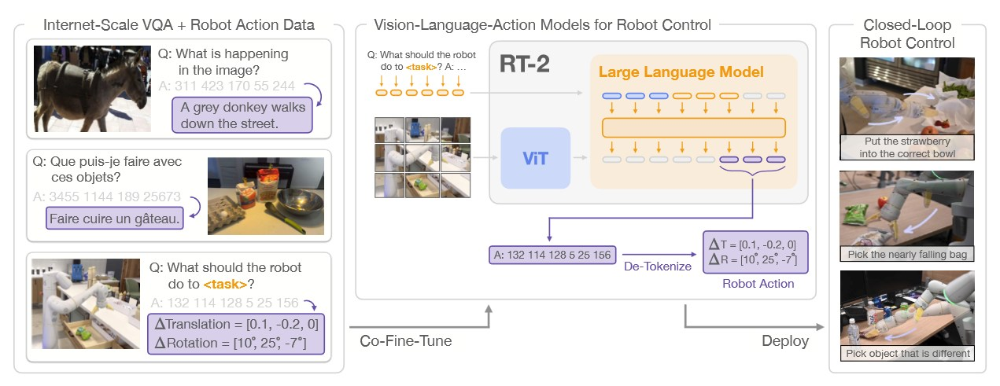
図1：RT-2 の概要。我々はロボットの行動をもう一つの言語として表現する。これはテキストトークンに変換でき、インターネット規模の視覚言語データセットと一緒に学習できる。推論時には、テキストトークンが脱トークン化されてロボットの行動となり、閉ループ制御が可能になる。これにより、ロボット方策の学習において視覚言語モデルのバックボーンと事前学習を活用し、その汎化能力、意味理解、推論能力の一部をロボット制御に転移することができる。RT-2 の実行例はプロジェクトの Web サイト robotics-transformer2.github.io で示している。
図中ラベル：Internet-Scale VQA + Robot Action Data＝インターネット規模の VQA＋ロボット行動データ、Q: What is happening in the image?＝Q：画像の中で何が起きているか？、A grey donkey walks down the street.＝灰色のロバが通りを歩いている。、Q: Que puis-je faire avec ces objets?（仏語）＝これらの物で何ができるか？、Faire cuire un gâteau.（仏語）＝ケーキを焼く。、Q: What should the robot do to <task>?＝Q：<タスク>を行うためにロボットは何をすべきか？、ΔTranslation＝並進の変化量、ΔRotation＝回転の変化量、Vision-Language-Action Models for Robot Control＝ロボット制御のための視覚・言語・行動モデル、Large Language Model＝大規模言語モデル、De-Tokenize＝脱トークン化、Robot Action＝ロボットの行動、Co-Fine-Tune＝共同ファインチューニング、Deploy＝展開、Closed-Loop Robot Control＝閉ループのロボット制御、Put the strawberry into the correct bowl＝イチゴを正しいボウルに入れよ、Pick the nearly falling bag＝落ちそうな袋を拾え、Pick object that is different＝他と異なる物体を拾え
この目的のため、我々は単純でありながら驚くほど効果的なアプローチを探求する。すなわち、オープン語彙の視覚質問応答や視覚対話のために設計された視覚言語モデルを、他のインターネット規模の視覚言語タスクを解くのと並行して、低レベルのロボット行動を出力するように直接学習させる。このようなモデルは通常、自然言語トークンを生成するように学習されるが、行動をテキストトークンにトークン化し、カメラ観測と組になったロボットへの指示に対して対応する行動を生成することで「応答」する「マルチモーダル文」（Driess et al., 2023）を作ることで、ロボット軌道で学習させることができる。このようにして、視覚言語モデルを、指示に従うロボット方策として振る舞うように直接学習させることができる。この単純なアプローチは、VLM をロボット方策に組み込むための従来の代替手法（Shridhar et al., 2022a）や、新たな視覚・言語・行動アーキテクチャをゼロから設計する手法（Reed et al., 2022）とは対照的である。我々の手法では、すでに多大な計算投資が償却済みの既存の視覚言語モデルを、新たなパラメータを一切追加することなく、テキストとして符号化された行動を出力するように学習させる。このカテゴリのモデルを視覚・言語・行動（VLA）モデルと呼ぶ。我々は RT-1（Brohan et al., 2022）で提案されたプロトコルに基づき、類似のデータセットを用いつつ、モデルを大規模な視覚言語バックボーンを用いるように拡張することで VLA モデルを具体化する。そのため、我々のモデルを RT-2（Robotics Transformer 2）と呼ぶ。概要を図 1 に示す。
このような視覚言語モデルから導出されたロボット方策は、ロボットデータから学習した物理的動作と、Web データから学習した画像やテキストを解釈する能力とを単一のモデルに統合し、さまざまな注目すべき能力を示すことを我々は観察した。新規物体や意味的に多様な指示への汎化が劇的に向上するという期待どおりの利点に加え、いくつもの創発的能力が観察された。モデルの物理的スキルは依然としてロボットデータに見られるスキルの分布に限定されるが、モデルは Web から得た知識を用いて画像や言語命令を解釈することで、それらのスキルを新しい方法で発揮する能力を獲得する。いくつかの代表例を図 2 に示す。モデルは、ロボットデータから学習した把持・配置（pick and place）スキルを転用して、特定の数字やアイコンなど意味的に指示された位置の近くに物体を置くことができる。そのような手がかりはロボットデータには存在しないにもかかわらずである。また、ロボットのデモンストレーションではそのような関係が一切与えられていないにもかかわらず、モデルは物体間の関係を解釈して、どの物体を拾い、どこに置くかを決定することもできる。さらに、命令を思考の連鎖プロンプト（chain of thought prompting）で拡張すると、モデルはさらに複雑な意味的推論を行うことができる。例えば、即席のハンマーとして使うためにどの物体を拾うべきか（石）、あるいは疲れている人に最も適した飲み物はどれか（エナジードリンク）を判断することができる。
我々の主な貢献は RT-2 である。これは、Web 規模のデータで学習された大規模視覚言語モデルをファインチューニングし、汎化可能で意味を理解したロボット方策として直接動作させることで導出されるモデル群である。実験では、インターネットデータと、先行研究（Brohan et al., 2022）による指示の注釈付きロボット軌道で学習した、最大 55B パラメータのモデルを調べる。6k 回のロボット評価を通じて、RT-2 が物体、シーン、指示に対する汎化を大幅に改善し、Web 規模の視覚言語事前学習から受け継いだ幅広い創発的能力を示すことを明らかにする。
2 関連研究
視覚言語モデル。視覚言語モデル（Vision-Language Models：VLM）にはいくつかのカテゴリがあり（Gan et al., 2022）、本研究に最も関連が深いのはおそらく次の二つである。(1) CLIP（Radford et al., 2021）のような表現学習モデルで、両モダリティに共通の埋め込みを学習するもの。(2) {vision, text} → {text} という形式の視覚言語モデルで、視覚と言語を入力として受け取り自由形式のテキストを出力するよう学習するもの。どちらのカテゴリも、物体分類（Radford et al., 2021）、検出（Gu et al., 2021）、セグメンテーション（Ghiasi et al., 2021）など、多種多様な下流応用のための事前学習を提供するのに用いられてきた。本研究では後者のカテゴリに焦点を当てる（Alayrac et al., 2022; Chen et al., 2023a,b; Driess et al., 2023; Hao et al., 2022; Li et al., 2023, 2019; Lu et al., 2019）。これらのモデルは一般に、画像キャプション生成、視覚質問応答（VQA）、一般的な言語タスクなど、多数の異なるタスクについて複数のデータセットで同時に学習される。先行研究はロボティクスを含む幅広い問題や設定で VLM を研究しているが、我々の焦点は、VLM にロボットの行動を予測する能力を与えることで VLM の能力をロボティクスの閉ループ制御へとどのように拡張できるかにあり、それによって VLM にすでに備わっている知識を活用して新たな水準の汎化を可能にすることにある。
ロボット学習における汎化。多様なシナリオで広く成功できるロボット制御器を開発することは、ロボティクス研究における長年の目標である（Kaelbling, 2020; Smith and Coles, 1973）。ロボットマニピュレーションにおいて汎化を可能にする有望なアプローチは、大規模かつ多様なデータセットから学習することである（Dasari et al., 2019; Levine et al., 2018; Pinto and Gupta, 2016）。そうすることで、先行手法は、ロボットが新規の物体インスタンス（Finn and Levine, 2017; Levine et al., 2018; Mahler et al., 2017; Pinto and Gupta, 2016; Young et al., 2021）、物体とスキルの新しい組合せを伴うタスク（Dasari and Gupta, 2021; Finn et al., 2017; James et al., 2018; Jang et al., 2021; Yu et al., 2018）、新しい目標や言語指示（Jang et al., 2021; Jiang et al., 2022; Liu et al., 2022; Mees et al., 2022; Nair et al., 2022a; Pong et al., 2019）、新規の意味的物体カテゴリを含むタスク（Shridhar et al., 2021; Stone et al., 2023）、そして未知の環境（Cui et al., 2022; Du et al., 2023a; Hansen et al., 2020）へとどのように汎化できるかを示してきた。これら先行研究の多くとは異なり、我々はこれらすべての軸に沿って未知の条件へ汎化できる単一のモデルを開発し、研究することを目指す。我々のアプローチの重要な要素は、ロボットが見るデータよりもはるかに広範なデータに触れてきた事前学習済みモデルを活用することである。
ロボットマニピュレーションのための事前学習。事前学習はロボット学習において長い歴史を持つ。ほとんどの研究は、ロボットのカメラ観測のエンコーダを初期化するのに使える事前学習済み視覚表現に焦点を当てており、それらは教師あり ImageNet 分類（Shah and Kumar, 2021）、データ拡張（Kostrikov et al., 2020; Laskin et al., 2020a,b; Pari et al., 2021）、あるいはロボット制御向けに調整された目的関数（Karamcheti et al., 2023; Ma et al., 2022; Majumdar et al., 2023b; Nair et al., 2022b; Xiao et al., 2022b）によって得られる。他の研究では、事前学習済み言語モデルを、多くの場合は指示エンコーダとして（Brohan et al., 2022; Hill et al., 2020; Jang et al., 2021; Jiang et al., 2022; Lynch and Sermanet, 2020; Nair et al., 2022a; Shridhar et al., 2022b）、あるいは高レベルの計画のために（Ahn et al., 2022; Driess et al., 2023; Huang et al., 2022; Mu et al., 2023; Singh et al., 2023; Wu et al., 2023）組み込んでいる。我々は、事前学習済みの視覚モデルや事前学習済み言語モデルを用いるのではなく、世界についての豊富で接地された知識を提供する事前学習済み視覚言語モデル（VLM）の利用を特に検討する。先行研究はロボティクスにおける VLM の利用を研究しており（Driess et al., 2023; Du et al., 2023b; Gadre et al., 2022; Karamcheti et al., 2023; Shah et al., 2023; Shridhar et al., 2021; Stone et al., 2023）、本研究の着想の一部となっている。これらの先行アプローチは、VLM を視覚的状態表現（Karamcheti et al., 2023）、物体の識別（Gadre et al., 2022; Stone et al., 2023）、高レベルの計画（Driess et al., 2023）、あるいは教師信号や成功判定の提供（Du et al., 2023b; Ma et al., 2023; Sumers et al., 2023; Xiao et al., 2022a; Zhang et al., 2023）に用いている。CLIPort（Shridhar et al., 2021）と MOO（Stone et al., 2023）は事前学習済み VLM をエンドツーエンドの視覚運動（visuomotor）マニピュレーション方策に統合しているが、いずれも方策に大きな構造を組み込んでおり、それが適用範囲を制限している。特に、我々の研究は制限された 2 次元の行動空間に依存せず、校正済みカメラも必要としない。さらに決定的な違いとして、これらの研究とは異なり我々は言語を生成する VLM を活用しており、我々の定式化の統一された出力空間により、行動専用のモデル層コンポーネントを導入することなく、言語タスクと行動タスクの間でモデルの重みを完全に共有することができる。
3 視覚・言語・行動モデル
本節では、我々のモデル群と、VLM が閉ループのロボット制御を直接実行できるように学習させるための設計上の選択を提示する。まず、我々のモデルの一般的なアーキテクチャと、それが視覚言語タスクで一般的に用いられるモデルからどのように導出できるかを説明する。次に、Web 規模のデータで事前学習された大規模 VLM をファインチューニングしてロボットの行動を直接出力させ、VLA モデルとするためのレシピと課題を紹介する。最後に、リアルタイム制御を可能にするためにモデルサイズと推論速度に関する課題に対処し、これらのモデルをロボットタスクで実用的なものにする方法を述べる。
3.1 事前学習済み視覚言語モデル
本研究で基盤とする視覚言語モデル（Chen et al., 2023a; Driess et al., 2023）は、1 枚以上の画像を入力として受け取り、慣例的には自然言語テキストを表すトークン列を生成する。このようなモデルは、画像の構成の推論から、個々の物体やそれらと他の物体との関係についての質問への回答まで、幅広い視覚的解釈・推論タスクを実行できる（Alayrac et al., 2022; Chen et al., 2023a; Driess et al., 2023; Huang et al., 2023）。このように幅広いタスクを実行するのに必要な知識を表現するには、大規模なモデルと Web 規模のデータセットが必要である。本研究では、先行研究で提案された二つの VLM、すなわち PaLI-X（Chen et al., 2023a）と PaLM-E（Driess et al., 2023）を VLA モデルとして動作するように適応させる。これらのモデルの視覚・言語・行動版を、それぞれ RT-2-PaLI-X、RT-2-PaLM-E と呼ぶ。これらのモデルについて、数十億から数百億パラメータまでのサイズのインスタンスを利用する。二つのモデルのアーキテクチャの詳細は付録 D で述べる。
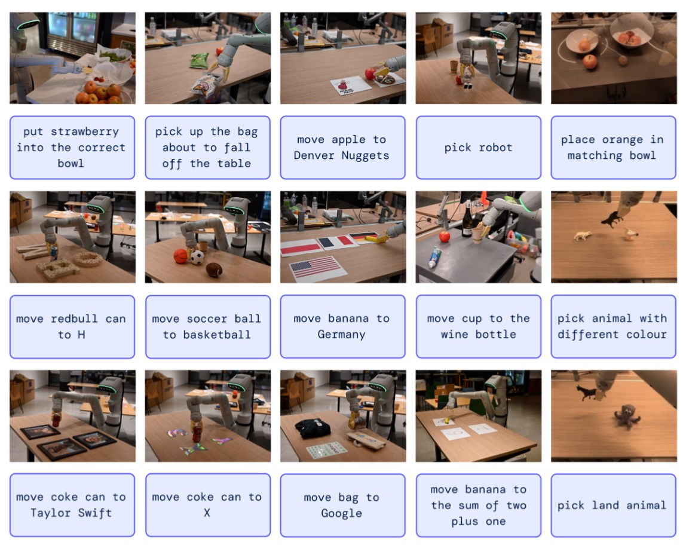
図2：RT-2 は、推論、記号理解、人物認識を必要とするさまざまな実世界の状況に汎化することができる。これらの困難なシナリオについては 4 節で詳しく調べる。
図中ラベル（左上から行ごと）：put strawberry into the correct bowl＝イチゴを正しいボウルに入れよ、pick up the bag about to fall off the table＝テーブルから落ちそうな袋を拾え、move apple to Denver Nuggets＝リンゴをデンバー・ナゲッツ（のロゴ）へ移動せよ、pick robot＝ロボット（の人形）を拾え、place orange in matching bowl＝オレンジを合うボウルに置け／move redbull can to H＝レッドブルの缶を H へ移動せよ、move soccer ball to basketball＝サッカーボールをバスケットボールへ移動せよ、move banana to Germany＝バナナをドイツ（の国旗）へ移動せよ、move cup to the wine bottle＝カップをワインボトルへ移動せよ、pick animal with different colour＝色の異なる動物を拾え／move coke can to Taylor Swift＝コーラの缶をテイラー・スウィフト（の写真）へ移動せよ、move coke can to X＝コーラの缶を X へ移動せよ、move bag to Google＝袋を Google（のロゴ）へ移動せよ、move banana to the sum of two plus one＝バナナを 2 足す 1 の和（の数字）へ移動せよ、pick land animal＝陸上の動物を拾え
3.2 ロボット行動のファインチューニング
視覚言語モデルがロボットを制御できるようにするには、行動を出力するように学習させなければならない。我々はこの問題に直接的なアプローチをとり、行動をモデル出力中のトークンとして表現し、言語トークンと同じように扱う。行動の符号化は、Brohan et al.（2022）が RT-1 モデルのために提案した離散化に基づく。行動空間は、ロボットのエンドエフェクタの 6 自由度（6-DoF）の位置・回転変位、ロボットのグリッパの開き具合、そしてエピソードを終了するための特別な離散コマンドからなる。この終了コマンドは、タスクの成功裏の完了を知らせるために方策が発行すべきものである。連続次元（離散的な終了コマンドを除くすべての次元）は一様に 256 個のビンに離散化される。したがって、ロボットの行動は離散ビンの序数を用いて 8 個の整数で表現できる。これらの離散化された行動を用いて視覚言語モデルを視覚・言語・行動モデルにファインチューニングするには、モデルの既存のトークン化におけるトークンを離散行動ビンに対応付ける必要がある。これには、行動トークンとして機能する 256 個のトークンを確保する必要がある。どのトークンを選ぶかは各 VLM が用いる個別のトークン化に依存し、それについては本節の後半で述べる。VLM のファインチューニングの目標（ターゲット）を定義するため、各次元の行動トークンを空白文字で単純に連結することで、行動ベクトルを単一の文字列に変換する。
\[ \text{“terminate}\ \ \Delta\text{pos}_x\ \ \Delta\text{pos}_y\ \ \Delta\text{pos}_z\ \ \Delta\text{rot}_x\ \ \Delta\text{rot}_y\ \ \Delta\text{rot}_z\ \ \text{gripper\_extension”}. \]
このようなターゲットの具体例は「1 128 91 241 5 101 127」のようになりうる。実験でファインチューニングする二つの VLM、PaLI-X（Chen et al., 2023a）と PaLM-E（Driess et al., 2023）は、異なるトークン化を用いる。PaLI-X では 1000 までの整数がそれぞれ固有のトークンを持つため、行動ビンを対応する整数を表すトークンに単純に対応付ける。このような便利な数値表現を持たない PaLM-E モデルでは、最も使用頻度の低い 256 個のトークンを単純に上書きして行動語彙を表現する。VLM に既存のトークンを行動トークンで上書きするよう学習させることは、シンボルチューニング（symbol tuning）（Wei et al., 2023）の一形態であり、先行研究で VLM に対してうまく機能することが示されている点は注目に値する。
上述の行動表現を用いて、ロボットデータを VLM のファインチューニングに適した形に変換する。入力にはロボットのカメラ画像とテキストによるタスク記述（標準的な VQA 形式「Q: what action should the robot take to [task instruction]? A:」（Q：[タスク指示] を行うためにロボットはどの行動をとるべきか？ A：）を使用）が含まれ、出力はロボットの行動を表す数値／最低使用頻度トークンの文字列として整形される。
共同ファインチューニング。実験で示すように、ロボットの性能を向上させる学習レシピの重要な技術的詳細は、ロボットデータのみで素朴にファインチューニングするのではなく、ロボティクスデータを元の Web データとともに共同ファインチューニング（co-fine-tuning）することである。共同ファインチューニングでは、方策がファインチューニング中にロボットの行動だけでなく、Web 規模のデータに由来する抽象的な視覚概念と低レベルのロボット行動の両方に触れるため、より汎化可能な方策が得られることに我々は気づいた。共同ファインチューニングでは、ロボットデータセットのサンプリング重みを増やすことで、各訓練バッチにおけるロボットデータと Web データの比率のバランスをとる。
出力の制約。RT-2 と標準的な VLM との重要な違いの一つは、RT-2 が実機ロボットで実行するために有効な行動トークンを出力しなければならないことである。そこで、デコード時に RT-2 が有効な行動トークンを出力することを保証するため、モデルにロボット行動タスクのプロンプトが与えられたときには有効な行動トークンのみをサンプリングすることで出力語彙を制約する。一方、標準的な視覚言語タスクでは、モデルは依然として自然言語トークンの全範囲を出力することが許される。
3.3 リアルタイム推論
現代の VLM のサイズは数百億から数千億パラメータに達しうる（Chen et al., 2023a; Driess et al., 2023）。本研究で学習した最大のモデルは 55B パラメータを用いる。このようなモデルを、リアルタイムのロボット制御で一般的に用いられる標準的なデスクトップ型マシンやロボット搭載 GPU 上で直接実行することは不可能である。我々の知る限り、我々のモデルは直接的な閉ループのロボット制御に用いられたものとしては、従来より 1 桁以上大きい史上最大のものであり、したがって効率的なリアルタイム推論を可能にする新たな一連の解決策を必要とする。我々は、RT-2 モデルをマルチ TPU のクラウドサービスに展開し、ネットワーク越しにこのサービスに問い合わせることで、ロボット上で RT-2 モデルを実行できるプロトコルを開発した。この解決策により、適切な制御周波数を達成できるとともに、同一のクラウドサービスで複数のロボットに対応することもできる。我々が評価した最大のモデルである 55B パラメータの RT-2-PaLI-X-55B モデルは 1〜3 Hz の周波数で動作できる。同モデルの 5B パラメータからなる小型版は約 5 Hz の周波数で動作できる。
4 実験
我々の実験は RT-2 の実世界での汎化と創発的能力に焦点を当て、次の問いに答えることを目指す。
- RT-2 は既知のタスクでどの程度の性能を示し、さらに重要な点として、新しい物体、背景、環境にどの程度汎化するか。
- RT-2 の創発的能力を観察し、測定することはできるか。
- 汎化はパラメータ数やその他の設計上の決定によってどのように変化するか。
- RT-2 は視覚言語モデルと同様に、思考の連鎖（chain-of-thought）による推論の兆候を示すことができるか。
我々は、以下の節で説明するさまざまな条件のもとで、約 6,000 本の評価軌道を用いて我々のアプローチといくつかのベースラインを評価する。特に断らない限り、3.2 節で説明した行動空間を持つ 7 自由度（7DoF）の移動マニピュレータを用いる。RT-2 の実行例はプロジェクトの Web サイト robotics-transformer2.github.io でも示している。我々は事前学習済み VLM を活用する RT-2 の二つの具体的なインスタンスを学習させる。(1) RT-2-PaLI-X は 5B および 55B の PaLI-X（Chen et al., 2023a）から構築され、(2) RT-2-PaLM-E は 12B の PaLM-E（Driess et al., 2023）から構築される。
学習には、Chen et al.（2023a）および Driess et al.（2023）による元の Web 規模データを活用する。これは視覚質問応答、キャプション生成、および構造化されていない画像とテキストの交互配置（interwoven）事例からなる。これを Brohan et al.（2022）によるロボットのデモンストレーションデータと組み合わせる。このデータは、オフィスのキッチン環境で 13 台のロボットを用いて 17 か月にわたり収集されたものである。各ロボットのデモンストレーション軌道には、実行されたタスクを記述する自然言語の指示が注釈として付けられており、指示はスキルを表す動詞（例：「pick」（拾う）、「open」（開ける）、「place into」（中に置く））と、操作される物体を表す 1 つ以上の名詞（例：「7up can」（7up の缶）、「drawer」（引き出し）、「napkin」（ナプキン））からなる（使用したデータセットの詳細は付録 B を参照）。RT-2 のすべての学習において、学習率スケジュールや正則化を含め、元の PaLI-X（Chen et al., 2023a）および PaLM-E（Driess et al., 2023）の論文のハイパーパラメータを採用する。学習の詳細は付録 E にある。
ベースライン。我々の手法を、手法のさまざまな側面に挑む複数の最先端ベースラインと比較する。すべてのベースラインはまったく同じロボットデータを用いる。最先端の方策と比較するため、35M パラメータの Transformer ベースのモデルである RT-1（Brohan et al., 2022）を用いる。最先端の事前学習済み表現と比較するため、VC-1（Majumdar et al., 2023a）と R3M（Nair et al., 2022b）を用いる。これらの方策は、それぞれの表現を入力として受け取るように RT-1 バックボーンを学習させることで実装する。VLM を利用する他のアーキテクチャと比較するため、MOO（Stone et al., 2023）を用いる。MOO は VLM を用いて意味マップのための追加の画像チャネルを作成し、それを RT-1 バックボーンに入力する。詳細は付録 C に示す。
4.1 RT-2 は既知のタスクでどの程度の性能を示し、さらに重要な点として、新しい物体、背景、環境にどの程度汎化するか
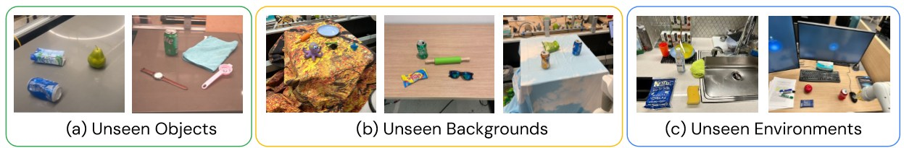
図3：図 4 と図 6b、および表 4 と表 6 の評価に用いた汎化シナリオの例。
図中ラベル：(a) Unseen Objects＝未知の物体、(b) Unseen Backgrounds＝未知の背景、(c) Unseen Environments＝未知の環境
分布内の性能と汎化能力を評価するため、RT-2-PaLI-X および RT-2-PaLM-E モデルを、前節で挙げた四つのベースラインと比較する。既知タスク（seen tasks）のカテゴリでは、RT-1（Brohan et al., 2022）と同じ既知の指示セットを用いる。この評価には 200 以上のタスクが含まれる。内訳は、物体を拾うタスクが 36、物体を倒すタスクが 35、物を立てるタスクが 35、物体を移動するタスクが 48、さまざまな引き出しを開閉するタスクが 18、引き出しから物体を取り出したり引き出しに物体を入れたりするタスクが 36 である。ただし、これらの「分布内」評価でも、物体の配置や、時間帯、ロボットの位置といった要因は変化させており、スキルが環境の現実的なばらつきに汎化することが求められる点に注意されたい。
図 3 は汎化評価の例を示しており、評価は未知のカテゴリ（物体、背景、環境）に分けられ、さらに易しいケースと難しいケースに分けられる。未知の物体については、難しいケースには把持がより難しい物体や、より独特な物体（おもちゃなど）が含まれる。未知の背景については、難しいケースにはより多様な背景と新規の物体が含まれる。最後に、未知の環境については、難しいケースはモニタや周辺機器のある、視覚的により異なるオフィスのデスク環境に対応し、易しい環境はキッチンのシンクである。これらの評価は、多様なシナリオにおける主に把持・配置スキルに焦点を当てた 280 以上のタスクからなる。未知カテゴリの指示のリストは付録 F.2 に示す。
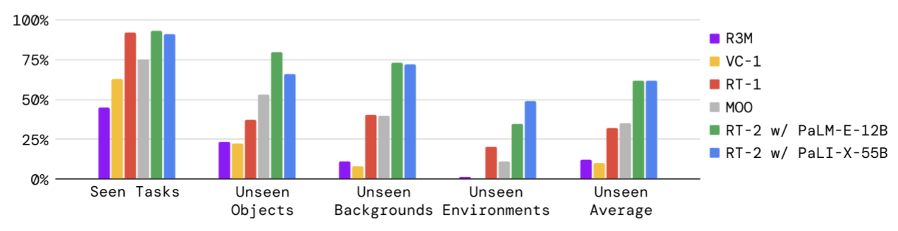
図4：RT-2 の二つのインスタンスとベースラインの全体的な性能。既知の訓練タスク、ならびに新規物体・新規背景・新規環境への汎化を測る未知評価にわたって示す。完全な結果は付録の表 4 に詳述する。
図中ラベル：縦軸＝成功率、Seen Tasks＝既知タスク、Unseen Objects＝未知の物体、Unseen Backgrounds＝未知の背景、Unseen Environments＝未知の環境、Unseen Average＝未知の平均、RT-2 w/ PaLM-E-12B＝PaLM-E-12B を用いた RT-2、RT-2 w/ PaLI-X-55B＝PaLI-X-55B を用いた RT-2
評価結果を図 4 と付録の表 4 に示す。既知タスクでの性能は RT-2 モデルと RT-1 で同程度であり、他のベースラインはより低い成功率にとどまる。RT-2 モデルとベースラインとの差はさまざまな汎化実験で最も顕著であり、視覚・言語・行動モデルの強みが、インターネット規模の事前学習データからより汎化可能な視覚的・意味的概念を転移することにあることを示唆している。ここでは平均して RT-2 の二つのインスタンスは同程度の性能を示し、次点の二つのベースラインである RT-1 と MOO に対して約 2 倍、その他のベースラインに対して約 6 倍の改善となっている。RT-2 の PaLM-E 版は、汎化シナリオの難しい版では RT-2-PaLI-X より良い性能を示す一方、易しい版では劣るようであり、結果として平均性能は同程度となっている。
オープンソースの Language Table ベンチマーク。オープンソースのベースラインと環境を用いた追加の比較点を提供するため、Lynch et al.（2022）によるオープンソースの Language-Table シミュレーション環境を活用する。我々は、より小型の PaLI 3B モデルを、Language-Table データセットに対するドメイン内の VQA タスクを含むいくつかの予測タスクで共同ファインチューニングし、得られた方策をシミュレーションで評価する。行動予測タスクでは、行動を離散化して「X Y」という形式のテキストとして符号化する。ここで X と Y は {-10, -9, …, +9, +10} の範囲をとり、エンドエフェクタの 2 次元デカルト座標上の目標設定点の差分を表す。サイズが縮小されているため、得られたモデルは他のベースラインと同程度の速度（5 Hz）で推論を実行できる。この実験の結果を表 1 に示す。我々のモデルを用いるとベースラインと比べて大幅な性能向上が観察され、VLM ベースの事前学習と大規模な PaLI モデルの表現力が、他のシナリオ、この場合は別のロボットを用いたシミュレーションでも有益でありうることを示している。また、図 5 では実世界での分布外の挙動を定性的に示し（訳注：原文は「behaviors behaviors」と語が重複している）、新規の押し動作タスクや、この環境でこれまで見たことのない物体を対象とする様子を示す。Language Table 実験の詳細は付録 B と D にある。
4.2 RT-2 の創発的能力を観察し、測定することはできるか
視覚・言語・行動モデルの汎化能力を評価することに加えて、そのようなモデルが Web からの知識の転移によって、ロボットデータで示された能力を超える新たな能力をどの程度実現できるかも評価することを目指す。このような能力を、インターネット規模の事前学習の転移によって創発するという意味で、創発的（emergent）と呼ぶ。このような転移によって新たなロボットの動作が可能になるとは期待しないが、関係や名詞を含む意味的・視覚的概念は、それらの概念がロボットデータに現れていない場合でも効果的に転移すると期待する。
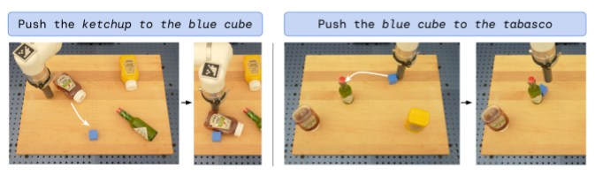
図5：Language Table 環境における実世界での分布外の挙動。表 1 と同一の RT-2-PaLI-3B モデルのチェックポイントを用いている。
図中ラベル：Push the ketchup to the blue cube＝ケチャップを青い立方体まで押せ、Push the blue cube to the tabasco＝青い立方体をタバスコまで押せ
| モデル | Language-Table |
|---|---|
| BC-Zero（Jang et al., 2021） | 72 ± 3 |
| RT-1（Brohan et al., 2022） | 74 ± 13 |
| LAVA（Lynch et al., 2022） | 77 ± 4 |
| RT-2-PaLI-3B（ours） | 90 ± 10 |
表1：シミュレーションの Language-Table タスク（Lynch and Sermanet, 2020）における性能。
定性的評価。まず、RT-2-PaLI-X モデルを用いて、視覚言語概念から転移したさまざまな創発的能力を明らかにする実験を行う。そのような相互作用の例のいくつかを図 2 に示す。探索を通じて、RT-2 がシーンの文脈における意味理解と基本的な推論の点で新たな能力を受け継いでいることがわかった。例えば、「put strawberry into the correct bowl」（イチゴを正しいボウルに入れよ）というタスクを達成するには、イチゴやボウルが何であるかを理解するだけでなく、シーンの文脈で推論して、イチゴは同類の果物と一緒にすべきだと知るという、繊細な理解が必要である。「pick up the bag about to fall off the table」（テーブルから落ちそうな袋を拾え）というタスクでは、RT-2 は物理的な理解を示し、二つの袋を区別して不安定に置かれた物体を認識する。これらのシナリオでテストした相互作用はいずれもロボットデータには一度も現れておらず、視覚言語データからの意味的知識の転移を示している。
定量的評価。これらの創発的能力を定量化するため、前の評価で上位二つのベースラインである RT-1 と VC-1 を取り上げ、我々の二つのモデル RT-2-PaLI-X および RT-2-PaLM-E と比較する。これらの実験の分散を減らすため、すべての手法を A/B テストの枠組み（Fisher, 1936）を用いて評価する。この枠組みでは、四つのモデルすべてをまったく同じ条件のもとで順番に評価する。
我々は RT-2 の創発的能力を、推論と意味理解の軸をカバーする三つのカテゴリに分ける（各カテゴリの例は付録の図 8 に示す）。一つ目は記号理解（symbol understanding）と呼ぶもので、RT-2 方策が、どのロボットデータにも存在しなかった視覚言語事前学習由来の意味的知識を転移するかどうかを明示的にテストする。このカテゴリの指示例は「move apple to 3」（リンゴを 3 へ移動せよ）や「push coke can on top of heart」（コーラの缶をハートの上に押せ）である。二つ目のカテゴリは推論（reasoning）と呼び、基盤となる VLM の推論のさまざまな側面を制御タスクに適用する能力を示す。これらのタスクには、視覚的推論（「move the apple to cup with same color」（リンゴを同じ色のカップへ移動せよ））、数学（「move X near the sum of two plus one」（X を 2 足す 1 の和の近くへ移動せよ））、そして多言語理解（「mueve la manzana al vaso verde」（スペイン語で「リンゴを緑のコップへ移動せよ」））が必要である。最後のカテゴリは人物認識（human recognition）タスクと呼び、人間中心の理解と認識を示すための「move the coke can to the person with glasses」（コーラの缶を眼鏡をかけた人のところへ移動せよ）のようなタスクを含む。この評価に用いた指示の完全なリストは付録 F.2 に示す。
この実験の結果を図 6a に、すべての数値結果を付録 H.2 に示す。我々の VLA モデルはすべてのカテゴリでベースラインを大幅に上回り、最良の RT-2-PaLI-X モデルは次点のベースライン（RT-1）に対して平均成功率で 3 倍以上を達成した。また、より大きな PaLI-X ベースのモデルは平均して記号理解、推論、人物認識でより良い性能を示す一方、より小さな PaLM-E ベースのモデルは数学的推論を伴うタスクで優位に立つことにも注目する。この興味深い結果は、PaLM-E で用いられた事前学習データの混合が異なることに起因すると考えられる。その結果、主に視覚的に事前学習された PaLI-X よりも数値計算に長けたモデルになっている。
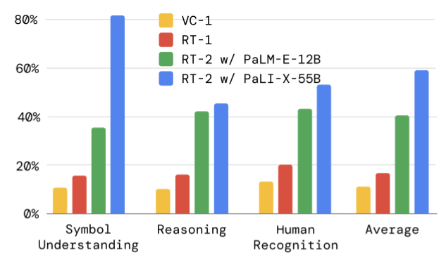
(a) さまざまな創発的スキルの評価（図 8）における RT-2 と二つのベースラインの性能比較。
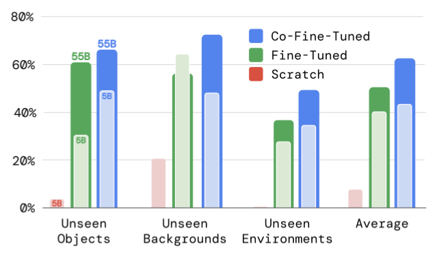
(b) パラメータ数と学習戦略が汎化に与える影響を示す RT-2-PaLI-X のアブレーション。
図6：(6a) 創発的スキル、および (6b) サイズと学習に関するアブレーションにおける RT-2 の定量的性能。完全な数値結果は付録の表 5 と表 6 に詳述する。
図中ラベル：(a) Symbol Understanding＝記号理解、Reasoning＝推論、Human Recognition＝人物認識、Average＝平均、RT-2 w/ PaLM-E-12B＝PaLM-E-12B を用いた RT-2、RT-2 w/ PaLI-X-55B＝PaLI-X-55B を用いた RT-2。(b) Unseen Objects＝未知の物体、Unseen Backgrounds＝未知の背景、Unseen Environments＝未知の環境、Average＝平均、Co-Fine-Tuned＝共同ファインチューニング、Fine-Tuned＝ファインチューニング、Scratch＝スクラッチから学習、5B／55B＝モデルサイズ（淡色の棒が 5B、濃色の棒が 55B）
4.3 汎化はパラメータ数やその他の設計上の決定によってどのように変化するか
この比較には、モデルサイズの点で柔軟性のある RT-2-PaLI-X モデルを用いる（PaLM-E の性質上、RT-2-PaLM-E は PaLM と ViT モデルの特定のサイズに限定される）。具体的には、5B と 55B という二つの異なるモデルサイズと、三つの異なる学習方法を比較する。すなわち、VLM の事前学習による重みを一切用いずにモデルをスクラッチから学習する方法、事前学習済みモデルをロボットの行動データのみでファインチューニングする方法、そして共同ファインチューニング（ファインチューニングを伴う共同学習）である。最後のものは本研究で用いる主要な手法であり、VLM のファインチューニングに元の VLM 訓練データとロボティクスデータの両方を用いる。我々の主な関心はこれらのモデルの汎化の側面にあるため、この一連の実験からは既知タスクの評価を除外する。
アブレーションの結果を図 6b と付録の表 6 に示す。第一に、非常に大きなモデルをスクラッチから学習すると、5B モデルでさえ非常に低い性能となることが観察される。この結果を踏まえ、さらに大きな 55B PaLI-X モデルをスクラッチから学習した場合の評価は省略することにした。第二に、モデルを（サイズにかかわらず）共同ファインチューニングすると、単にロボティクスデータでファインチューニングするよりも汎化性能が良くなることに気づいた。これは、学習のファインチューニング部分で元のデータを残しておくことで、モデルが VLM の学習中に獲得した以前の概念を忘れずに済むためだと考えられる。最後に、ある程度予想どおりではあるが、モデルのサイズを大きくすると汎化性能が向上することに気づいた。
4.4 RT-2 は視覚言語モデルと同様に、思考の連鎖による推論の兆候を示すことができるか
LLM における思考の連鎖プロンプト手法（Wei et al., 2022）に着想を得て、言語と行動を一体として活用する能力を高め、より高度な推論の振る舞いを引き出すことを期待して、PaLM-E を用いた RT-2 の変種をわずか数百勾配ステップだけファインチューニングする。データを拡張して、ロボットがとろうとしている行動の目的をまず自然言語で記述する追加の「Plan」（計画）ステップを含め、その後に実際の行動トークンが続くようにする。例えば「Instruction: I'm hungry. Plan: pick rxbar chocolate. Action: 1 128 124 136 121 158 111 255.」（指示：お腹が空いた。計画：rxbar のチョコレートを拾う。行動：1 128 124 136 121 158 111 255。）のようになる。このデータ拡張の方式は、VQA データセット（視覚的推論）とマニピュレーションデータセット（行動の生成）の間の橋渡しとして機能する。
思考の連鎖による推論を用いた RT-2 は、まず自然言語で行動を計画する場が与えられるため、より高度な命令に答えられることを定性的に観察した。これは、LLM や VLM をプランナとして用いること（Ahn et al., 2022; Driess et al., 2023）を、単一の VLA モデルの中で低レベル方策と組み合わせられるという初期的な証拠を与える、有望な方向性である。思考の連鎖による推論を用いた RT-2 のロールアウトを図 7 と付録 I に示す。
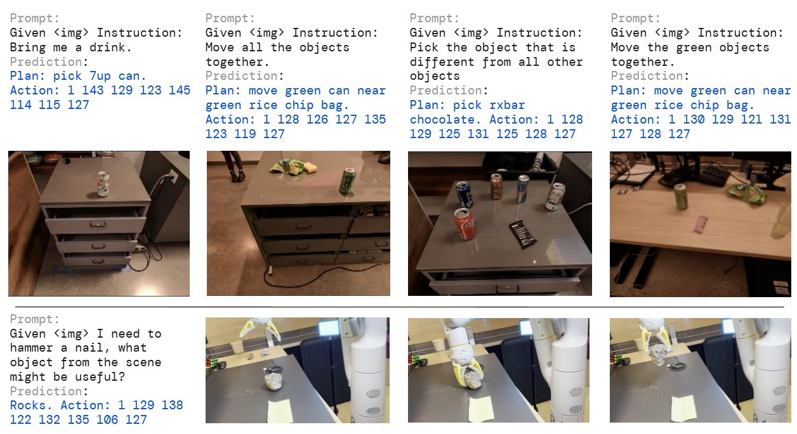
図7：思考の連鎖による推論を用いた RT-2 のロールアウト。RT-2 は計画と行動の両方を生成する。
図中ラベル：Prompt＝プロンプト、Prediction＝予測、Plan＝計画、Action＝行動、Given <img> Instruction: Bring me a drink.＝<画像>が与えられたとき、指示：飲み物を持ってきて。／Plan: pick 7up can.＝計画：7up の缶を拾う。／Move all the objects together.＝すべての物体を一か所に集めよ。／Plan: move green can near green rice chip bag.＝計画：緑の缶を緑のライスチップスの袋の近くへ移動する。／Pick the object that is different from all other objects＝他のすべての物体と異なる物体を拾え／Plan: pick rxbar chocolate.＝計画：rxbar のチョコレートを拾う。／Move the green objects together.＝緑色の物体を一か所に集めよ。／Given <img> I need to hammer a nail, what object from the scene might be useful?＝<画像>が与えられたとき、釘を打つ必要がある。シーン中のどの物体が役に立ちそうか？／Rocks.＝石。
5 限界
RT-2 は有望な汎化特性を示すものの、このアプローチには複数の限界がある。第一に、VLM を通じて Web 規模の事前学習を取り入れることで意味的・視覚的概念に対する汎化が高まることを示したが、ロボットはこの追加の経験を取り入れたことによって新たな動作を実行する能力を獲得するわけではない。モデルの物理的スキルは依然としてロボットデータに見られるスキルの分布に限定されるが（付録 G を参照）、それらのスキルを新しい方法で発揮することを学習する。これは、データセットがスキルの軸に沿って十分に多様でないことの結果であると考える。今後の研究の興味深い方向性は、人間の動画のような新たなデータ収集のパラダイムを通じて、新たなスキルをどのように獲得できるかを研究することである。
第二に、大規模な VLA モデルをリアルタイムで実行できることを示したが、これらのモデルの計算コストは高く、これらの手法を高周波数の制御が求められる設定に適用する際には、リアルタイム推論が大きなボトルネックとなりうる。今後の研究の興味深い方向性は、そのようなモデルをより高いレートで、あるいはより低コストのハードウェア上で実行できるようにする量子化や蒸留の手法を探ることである。これはもう一つの現在の限界、すなわち RT-2 の作成に利用できる一般に入手可能な VLM モデルが少数しかないという点にも関係している。より多くのオープンソースのモデルが利用可能になり（例：https://llava-vl.github.io/）、プロプライエタリなモデルがファインチューニング用 API を公開することを期待する。それが VLA モデルを構築するための十分条件である。
6 結論
本論文では、視覚言語モデル（VLM）の事前学習とロボティクスデータを組み合わせることで、視覚・言語・行動（VLA）モデルをどのように学習できるかを述べた。次に、PaLM-E と PaLI-X に基づく VLA の二つのインスタンスを提示し、それぞれ RT-2-PaLM-E、RT-2-PaLI-X と呼んだ。これらのモデルは、テキストトークンとして表現されたロボットの行動を出力するように、ロボット軌道データと共同ファインチューニングされる。我々のアプローチが非常に高性能なロボット方策をもたらし、さらに重要なことに、Web 規模の視覚言語事前学習から受け継いだ大幅に優れた汎化性能と創発的能力をもたらすことを示した。この単純かつ汎用的なアプローチは、ロボティクスがより優れた視覚言語モデルから直接恩恵を受けられるという見込みを示しており、ロボット学習の分野を、他分野の進歩とともにさらに改善していける戦略的な位置に置くものであると考える。
謝辞
Fred Alcober、Jodi Lynn Andres、Carolina Parada、Joseph Dabis、Rochelle Dela Cruz、Jessica Gomez、Gavin Gonzalez、John Guilyard、Tomas Jackson、Jie Tan、Scott Lehrer、Dee M、Utsav Malla、Sarah Nguyen、Jane Park、Emily Perez、Elio Prado、Jornell Quiambao、Clayton Tan、Jodexty Therlonge、Eleanor Tomlinson、Wenxuan Zhou の各氏、ならびに Google DeepMind チーム全体に、フィードバックと貢献に対して謝意を表する。
参考文献
参考文献は原文のまま掲載した。
- M. Ahn, A. Brohan, N. Brown, Y. Chebotar, O. Cortes, B. David, C. Finn, K. Gopalakrishnan, K. Hausman, A. Herzog, et al. Do as I can, not as I say: Grounding language in robotic affordances. arXiv preprint arXiv:2204.01691, 2022.
- J.-B. Alayrac, J. Donahue, P. Luc, A. Miech, I. Barr, Y. Hasson, K. Lenc, A. Mensch, K. Millican, M. Reynolds, et al. Flamingo: a visual language model for few-shot learning. arXiv preprint arXiv:2204.14198, 2022.
- R. Anil, A. M. Dai, O. Firat, M. Johnson, D. Lepikhin, A. Passos, S. Shakeri, E. Taropa, P. Bailey, Z. Chen, et al. Palm 2 technical report. arXiv preprint arXiv:2305.10403, 2023.
- A. Brohan, N. Brown, J. Carbajal, Y. Chebotar, J. Dabis, C. Finn, K. Gopalakrishnan, K. Hausman, A. Herzog, J. Hsu, et al. Rt-1: Robotics transformer for real-world control at scale. arXiv preprint arXiv:2212.06817, 2022.
- T. Brown, B. Mann, N. Ryder, M. Subbiah, J. D. Kaplan, P. Dhariwal, A. Neelakantan, P. Shyam, G. Sastry, A. Askell, et al. Language models are few-shot learners. Advances in neural information processing systems, 33:1877–1901, 2020.
- D. Cer, Y. Yang, S. Kong, N. Hua, N. Limtiaco, R. S. John, N. Constant, M. Guajardo-Cespedes, S. Yuan, C. Tar, Y. Sung, B. Strope, and R. Kurzweil. Universal sentence encoder. CoRR, abs/1803.11175, 2018. URL http://arxiv.org/abs/1803.11175.
- M. Chen, J. Tworek, H. Jun, Q. Yuan, H. P. d. O. Pinto, J. Kaplan, H. Edwards, Y. Burda, N. Joseph, G. Brockman, et al. Evaluating large language models trained on code. arXiv preprint arXiv:2107.03374, 2021.
- X. Chen, J. Djolonga, P. Padlewski, B. Mustafa, S. Changpinyo, J. Wu, C. R. Ruiz, S. Goodman, X. Wang, Y. Tay, S. Shakeri, M. Dehghani, D. Salz, M. Lucic, M. Tschannen, A. Nagrani, H. Hu, M. Joshi, B. Pang, C. Montgomery, P. Pietrzyk, M. Ritter, A. Piergiovanni, M. Minderer, F. Pavetic, A. Waters, G. Li, I. Alabdulmohsin, L. Beyer, J. Amelot, K. Lee, A. P. Steiner, Y. Li, D. Keysers, A. Arnab, Y. Xu, K. Rong, A. Kolesnikov, M. Seyedhosseini, A. Angelova, X. Zhai, N. Houlsby, and R. Soricut. Pali-x: On scaling up a multilingual vision and language model, 2023a.
- X. Chen, X. Wang, S. Changpinyo, A. Piergiovanni, P. Padlewski, D. Salz, S. Goodman, A. Grycner, B. Mustafa, L. Beyer, A. Kolesnikov, J. Puigcerver, N. Ding, K. Rong, H. Akbari, G. Mishra, L. Xue, A. Thapliyal, J. Bradbury, W. Kuo, M. Seyedhosseini, C. Jia, B. K. Ayan, C. Riquelme, A. Steiner, A. Angelova, X. Zhai, N. Houlsby, and R. Soricut. Pali: A jointly-scaled multilingual language-image model, 2023b.
- K. Cobbe, V. Kosaraju, M. Bavarian, M. Chen, H. Jun, L. Kaiser, M. Plappert, J. Tworek, J. Hilton, R. Nakano, et al. Training verifiers to solve math word problems. arXiv preprint arXiv:2110.14168, 2021.
- Z. J. Cui, Y. Wang, N. Muhammad, L. Pinto, et al. From play to policy: Conditional behavior generation from uncurated robot data. arXiv preprint arXiv:2210.10047, 2022.
- S. Dasari and A. Gupta. Transformers for one-shot visual imitation. In Conference on Robot Learning, pages 2071–2084. PMLR, 2021.
- S. Dasari, F. Ebert, S. Tian, S. Nair, B. Bucher, K. Schmeckpeper, S. Singh, S. Levine, and C. Finn. Robonet: Large-scale multi-robot learning. In Conference on Robot Learning, 2019.
- M. Dehghani, J. Djolonga, B. Mustafa, P. Padlewski, J. Heek, J. Gilmer, A. Steiner, M. Caron, R. Geirhos, I. Alabdulmohsin, R. Jenatton, L. Beyer, M. Tschannen, A. Arnab, X. Wang, C. Riquelme, M. Minderer, J. Puigcerver, U. Evci, M. Kumar, S. van Steenkiste, G. F. Elsayed, A. Mahendran, F. Yu, A. Oliver, F. Huot, J. Bastings, M. P. Collier, A. Gritsenko, V. Birodkar, C. Vasconcelos, Y. Tay, T. Mensink, A. Kolesnikov, F. Pavetić, D. Tran, T. Kipf, M. Lučić, X. Zhai, D. Keysers, J. Harmsen, and N. Houlsby. Scaling vision transformers to 22 billion parameters, 2023.
- D. Driess, F. Xia, M. S. Sajjadi, C. Lynch, A. Chowdhery, B. Ichter, A. Wahid, J. Tompson, Q. Vuong, T. Yu, et al. Palm-e: An embodied multimodal language model. arXiv preprint arXiv:2303.03378, 2023.
- M. Du, S. Nair, D. Sadigh, and C. Finn. Behavior retrieval: Few-shot imitation learning by querying unlabeled datasets. arXiv preprint arXiv:2304.08742, 2023a.
- Y. Du, K. Konyushkova, M. Denil, A. Raju, J. Landon, F. Hill, N. de Freitas, and S. Cabi. Vision-language models as success detectors. arXiv preprint arXiv:2303.07280, 2023b.
- C. Finn and S. Levine. Deep visual foresight for planning robot motion. In 2017 IEEE International Conference on Robotics and Automation (ICRA), pages 2786–2793. IEEE, 2017.
- C. Finn, T. Yu, T. Zhang, P. Abbeel, and S. Levine. One-shot visual imitation learning via meta-learning. In Conference on robot learning, pages 357–368. PMLR, 2017.
- R. A. Fisher. Design of experiments. British Medical Journal, 1(3923):554, 1936.
- S. Y. Gadre, M. Wortsman, G. Ilharco, L. Schmidt, and S. Song. Clip on wheels: Zero-shot object navigation as object localization and exploration. arXiv preprint arXiv:2203.10421, 2022.
- Z. Gan, L. Li, C. Li, L. Wang, Z. Liu, J. Gao, et al. Vision-language pre-training: Basics, recent advances, and future trends. Foundations and Trends® in Computer Graphics and Vision, 14(3–4):163–352, 2022.
- G. Ghiasi, X. Gu, Y. Cui, and T.-Y. Lin. Open-vocabulary image segmentation. arXiv preprint arXiv:2112.12143, 2021.
- K. Grauman, A. Westbury, E. Byrne, Z. Chavis, A. Furnari, R. Girdhar, J. Hamburger, H. Jiang, M. Liu, X. Liu, M. Martin, T. Nagarajan, I. Radosavovic, S. K. Ramakrishnan, F. Ryan, J. Sharma, M. Wray, M. Xu, E. Z. Xu, C. Zhao, S. Bansal, D. Batra, V. Cartillier, S. Crane, T. Do, M. Doulaty, A. Erapalli, C. Feichtenhofer, A. Fragomeni, Q. Fu, A. Gebreselasie, C. Gonzalez, J. Hillis, X. Huang, Y. Huang, W. Jia, W. Khoo, J. Kolar, S. Kottur, A. Kumar, F. Landini, C. Li, Y. Li, Z. Li, K. Mangalam, R. Modhugu, J. Munro, T. Murrell, T. Nishiyasu, W. Price, P. R. Puentes, M. Ramazanova, L. Sari, K. Somasundaram, A. Southerland, Y. Sugano, R. Tao, M. Vo, Y. Wang, X. Wu, T. Yagi, Z. Zhao, Y. Zhu, P. Arbelaez, D. Crandall, D. Damen, G. M. Farinella, C. Fuegen, B. Ghanem, V. K. Ithapu, C. V. Jawahar, H. Joo, K. Kitani, H. Li, R. Newcombe, A. Oliva, H. S. Park, J. M. Rehg, Y. Sato, J. Shi, M. Z. Shou, A. Torralba, L. Torresani, M. Yan, and J. Malik. Ego4d: Around the world in 3,000 hours of egocentric video, 2022.
- X. Gu, T.-Y. Lin, W. Kuo, and Y. Cui. Open-vocabulary object detection via vision and language knowledge distillation. arXiv preprint arXiv:2104.13921, 2021.
- N. Hansen, R. Jangir, Y. Sun, G. Alenyà, P. Abbeel, A. A. Efros, L. Pinto, and X. Wang. Self-supervised policy adaptation during deployment. arXiv preprint arXiv:2007.04309, 2020.
- Y. Hao, H. Song, L. Dong, S. Huang, Z. Chi, W. Wang, S. Ma, and F. Wei. Language models are general-purpose interfaces. arXiv preprint arXiv:2206.06336, 2022.
- F. Hill, S. Mokra, N. Wong, and T. Harley. Human instruction-following with deep reinforcement learning via transfer-learning from text. arXiv preprint arXiv:2005.09382, 2020.
- S. Huang, L. Dong, W. Wang, Y. Hao, S. Singhal, S. Ma, T. Lv, L. Cui, O. K. Mohammed, Q. Liu, et al. Language is not all you need: Aligning perception with language models. arXiv preprint arXiv:2302.14045, 2023.
- W. Huang, P. Abbeel, D. Pathak, and I. Mordatch. Language models as zero-shot planners: Extracting actionable knowledge for embodied agents. In International Conference on Machine Learning, pages 9118–9147. PMLR, 2022.
- S. James, M. Bloesch, and A. J. Davison. Task-embedded control networks for few-shot imitation learning. In Conference on robot learning, pages 783–795. PMLR, 2018.
- E. Jang, A. Irpan, M. Khansari, D. Kappler, F. Ebert, C. Lynch, S. Levine, and C. Finn. Bc-z: Zero-shot task generalization with robotic imitation learning. In Conference on Robot Learning, pages 991–1002. PMLR, 2021.
- Y. Jiang, A. Gupta, Z. Zhang, G. Wang, Y. Dou, Y. Chen, L. Fei-Fei, A. Anandkumar, Y. Zhu, and L. Fan. Vima: General robot manipulation with multimodal prompts. arXiv preprint arXiv:2210.03094, 2022.
- L. P. Kaelbling. The foundation of efficient robot learning. Science, 369(6506):915–916, 2020.
- S. Karamcheti, S. Nair, A. S. Chen, T. Kollar, C. Finn, D. Sadigh, and P. Liang. Language-driven representation learning for robotics. arXiv preprint arXiv:2302.12766, 2023.
- A. Kirillov, E. Mintun, N. Ravi, H. Mao, C. Rolland, L. Gustafson, T. Xiao, S. Whitehead, A. C. Berg, W.-Y. Lo, et al. Segment anything. arXiv preprint arXiv:2304.02643, 2023.
- I. Kostrikov, D. Yarats, and R. Fergus. Image augmentation is all you need: Regularizing deep reinforcement learning from pixels. arXiv preprint arXiv:2004.13649, 2020.
- M. Laskin, K. Lee, A. Stooke, L. Pinto, P. Abbeel, and A. Srinivas. Reinforcement learning with augmented data. Advances in neural information processing systems, 33:19884–19895, 2020a.
- M. Laskin, A. Srinivas, and P. Abbeel. Curl: Contrastive unsupervised representations for reinforcement learning. In International Conference on Machine Learning, pages 5639–5650. PMLR, 2020b.
- S. Levine, P. Pastor, A. Krizhevsky, J. Ibarz, and D. Quillen. Learning hand-eye coordination for robotic grasping with deep learning and large-scale data collection. The International journal of robotics research, 37(4-5):421–436, 2018.
- A. Lewkowycz, A. Andreassen, D. Dohan, E. Dyer, H. Michalewski, V. Ramasesh, A. Slone, C. Anil, I. Schlag, T. Gutman-Solo, et al. Solving quantitative reasoning problems with language models. arXiv preprint arXiv:2206.14858, 2022.
- J. Li, D. Li, S. Savarese, and S. Hoi. Blip-2: Bootstrapping language-image pre-training with frozen image encoders and large language models. arXiv preprint arXiv:2301.12597, 2023.
- L. H. Li, M. Yatskar, D. Yin, C.-J. Hsieh, and K.-W. Chang. Visualbert: A simple and performant baseline for vision and language. arXiv preprint arXiv:1908.03557, 2019.
- H. Liu, L. Lee, K. Lee, and P. Abbeel. Instruction-following agents with jointly pre-trained vision-language models. arXiv preprint arXiv:2210.13431, 2022.
- J. Lu, D. Batra, D. Parikh, and S. Lee. Vilbert: Pretraining task-agnostic visiolinguistic representations for vision-and-language tasks. Advances in neural information processing systems, 32, 2019.
- C. Lynch and P. Sermanet. Language conditioned imitation learning over unstructured data. arXiv preprint arXiv:2005.07648, 2020.
- C. Lynch, A. Wahid, J. Tompson, T. Ding, J. Betker, R. Baruch, T. Armstrong, and P. Florence. Interactive language: Talking to robots in real time. arXiv preprint arXiv:2210.06407, 2022.
- Y. J. Ma, S. Sodhani, D. Jayaraman, O. Bastani, V. Kumar, and A. Zhang. Vip: Towards universal visual reward and representation via value-implicit pre-training. arXiv preprint arXiv:2210.00030, 2022.
- Y. J. Ma, W. Liang, V. Som, V. Kumar, A. Zhang, O. Bastani, and D. Jayaraman. Liv: Language-image representations and rewards for robotic control. arXiv preprint arXiv:2306.00958, 2023.
- J. Mahler, J. Liang, S. Niyaz, M. Laskey, R. Doan, X. Liu, J. A. Ojea, and K. Goldberg. Dex-net 2.0: Deep learning to plan robust grasps with synthetic point clouds and analytic grasp metrics. arXiv preprint arXiv:1703.09312, 2017.
- A. Majumdar, K. Yadav, S. Arnaud, Y. J. Ma, C. Chen, S. Silwal, A. Jain, V.-P. Berges, P. Abbeel, J. Malik, et al. Where are we in the search for an artificial visual cortex for embodied intelligence? arXiv preprint arXiv:2303.18240, 2023a.
- A. Majumdar, K. Yadav, S. Arnaud, Y. J. Ma, C. Chen, S. Silwal, A. Jain, V.-P. Berges, P. Abbeel, J. Malik, et al. Where are we in the search for an artificial visual cortex for embodied intelligence? arXiv preprint arXiv:2303.18240, 2023b.
- O. Mees, L. Hermann, and W. Burgard. What matters in language conditioned robotic imitation learning over unstructured data. IEEE Robotics and Automation Letters, 7(4):11205–11212, 2022.
- M. Minderer, A. Gritsenko, A. Stone, M. Neumann, D. Weissenborn, A. Dosovitskiy, A. Mahendran, A. Arnab, M. Dehghani, Z. Shen, et al. Simple open-vocabulary object detection with vision transformers. arXiv preprint arXiv:2205.06230, 2022.
- Y. Mu, Q. Zhang, M. Hu, W. Wang, M. Ding, J. Jin, B. Wang, J. Dai, Y. Qiao, and P. Luo. Embodiedgpt: Vision-language pre-training via embodied chain of thought. arXiv preprint arXiv:2305.15021, 2023.
- S. Nair, E. Mitchell, K. Chen, S. Savarese, C. Finn, et al. Learning language-conditioned robot behavior from offline data and crowd-sourced annotation. In Conference on Robot Learning, pages 1303–1315. PMLR, 2022a.
- S. Nair, A. Rajeswaran, V. Kumar, C. Finn, and A. Gupta. R3m: A universal visual representation for robot manipulation. arXiv preprint arXiv:2203.12601, 2022b.
- OpenAI. Gpt-4 technical report, 2023.
- J. Pari, N. M. Shafiullah, S. P. Arunachalam, and L. Pinto. The surprising effectiveness of representation learning for visual imitation. arXiv preprint arXiv:2112.01511, 2021.
- L. Pinto and A. Gupta. Supersizing self-supervision: Learning to grasp from 50k tries and 700 robot hours. In 2016 IEEE international conference on robotics and automation (ICRA), pages 3406–3413. IEEE, 2016.
- S. Polu, J. M. Han, K. Zheng, M. Baksys, I. Babuschkin, and I. Sutskever. Formal mathematics statement curriculum learning. arXiv preprint arXiv:2202.01344, 2022.
- V. H. Pong, M. Dalal, S. Lin, A. Nair, S. Bahl, and S. Levine. Skew-fit: State-covering self-supervised reinforcement learning. arXiv preprint arXiv:1903.03698, 2019.
- A. Radford, J. W. Kim, C. Hallacy, A. Ramesh, G. Goh, S. Agarwal, G. Sastry, A. Askell, P. Mishkin, J. Clark, et al. Learning transferable visual models from natural language supervision. In International Conference on Machine Learning, pages 8748–8763. PMLR, 2021.
- S. Reed, K. Zolna, E. Parisotto, S. G. Colmenarejo, A. Novikov, G. Barth-Maron, M. Gimenez, Y. Sulsky, J. Kay, J. T. Springenberg, et al. A generalist agent. arXiv preprint arXiv:2205.06175, 2022.
- M. Ryoo, A. Piergiovanni, A. Arnab, M. Dehghani, and A. Angelova. Tokenlearner: Adaptive space-time tokenization for videos. Advances in Neural Information Processing Systems, 34:12786–12797, 2021.
- D. Shah, B. Osiński, b. ichter, and S. Levine. Lm-nav: Robotic navigation with large pre-trained models of language, vision, and action. In K. Liu, D. Kulic, and J. Ichnowski, editors, Proceedings of The 6th Conference on Robot Learning, volume 205 of Proceedings of Machine Learning Research, pages 492–504. PMLR, 14–18 Dec 2023. URL https://proceedings.mlr.press/v205/shah23b.html.
- R. Shah and V. Kumar. Rrl: Resnet as representation for reinforcement learning. arXiv preprint arXiv:2107.03380, 2021.
- M. Shridhar, L. Manuelli, and D. Fox. Cliport: What and where pathways for robotic manipulation. In Proceedings of the 5th Conference on Robot Learning (CoRL), 2021.
- M. Shridhar, L. Manuelli, and D. Fox. Cliport: What and where pathways for robotic manipulation. In Conference on Robot Learning, pages 894–906. PMLR, 2022a.
- M. Shridhar, L. Manuelli, and D. Fox. Perceiver-actor: A multi-task transformer for robotic manipulation. arXiv preprint arXiv:2209.05451, 2022b.
- I. Singh, V. Blukis, A. Mousavian, A. Goyal, D. Xu, J. Tremblay, D. Fox, J. Thomason, and A. Garg. Progprompt: Generating situated robot task plans using large language models. In ICRA, 2023.
- M. H. Smith and L. S. Coles. Design of a low cost, general purpose robot. In IJCAI, pages 324–336, 1973.
- A. Stone, T. Xiao, Y. Lu, K. Gopalakrishnan, K.-H. Lee, Q. Vuong, P. Wohlhart, B. Zitkovich, F. Xia, C. Finn, et al. Open-world object manipulation using pre-trained vision-language models. arXiv preprint arXiv:2303.00905, 2023.
- T. Sumers, K. Marino, A. Ahuja, R. Fergus, and I. Dasgupta. Distilling internet-scale vision-language models into embodied agents. arXiv preprint arXiv:2301.12507, 2023.
- Y. Tay, M. Dehghani, V. Q. Tran, X. Garcia, J. Wei, X. Wang, H. W. Chung, S. Shakeri, D. Bahri, T. Schuster, H. S. Zheng, D. Zhou, N. Houlsby, and D. Metzler. Ul2: Unifying language learning paradigms, 2023.
- S. Vemprala, R. Bonatti, A. Bucker, and A. Kapoor. Chatgpt for robotics: Design principles and model abilities. Microsoft Auton. Syst. Robot. Res, 2:20, 2023.
- J. Wang, Z. Yang, X. Hu, L. Li, K. Lin, Z. Gan, Z. Liu, C. Liu, and L. Wang. Git: A generative image-to-text transformer for vision and language. arXiv preprint arXiv:2205.14100, 2022.
- J. Wei, X. Wang, D. Schuurmans, M. Bosma, E. Chi, Q. Le, and D. Zhou. Chain of thought prompting elicits reasoning in large language models. arXiv preprint arXiv:2201.11903, 2022.
- J. Wei, L. Hou, A. Lampinen, X. Chen, D. Huang, Y. Tay, X. Chen, Y. Lu, D. Zhou, T. Ma, and Q. V. Le. Symbol tuning improves in-context learning in language models, 2023.
- J. Wu, R. Antonova, A. Kan, M. Lepert, A. Zeng, S. Song, J. Bohg, S. Rusinkiewicz, and T. Funkhouser. Tidybot: Personalized robot assistance with large language models. arXiv preprint arXiv:2305.05658, 2023.
- T. Xiao, H. Chan, P. Sermanet, A. Wahid, A. Brohan, K. Hausman, S. Levine, and J. Tompson. Robotic skill acquisition via instruction augmentation with vision-language models. arXiv preprint arXiv:2211.11736, 2022a.
- T. Xiao, I. Radosavovic, T. Darrell, and J. Malik. Masked visual pre-training for motor control. arXiv preprint arXiv:2203.06173, 2022b.
- S. Young, D. Gandhi, S. Tulsiani, A. Gupta, P. Abbeel, and L. Pinto. Visual imitation made easy. In Conference on Robot Learning, pages 1992–2005. PMLR, 2021.
- K.-T. Yu, M. Bauza, N. Fazeli, and A. Rodriguez. More than a million ways to be pushed. a high-fidelity experimental dataset of planar pushing. In 2016 IEEE/RSJ international conference on intelligent robots and systems (IROS), pages 30–37. IEEE, 2016.
- T. Yu, C. Finn, A. Xie, S. Dasari, T. Zhang, P. Abbeel, and S. Levine. One-shot imitation from observing humans via domain-adaptive meta-learning. arXiv preprint arXiv:1802.01557, 2018.
- X. Zhai, A. Kolesnikov, N. Houlsby, and L. Beyer. Scaling vision transformers. In Proceedings of the IEEE/CVF Conference on Computer Vision and Pattern Recognition, pages 12104–12113, 2022.
- X. Zhang, Y. Ding, S. Amiri, H. Yang, A. Kaminski, C. Esselink, and S. Zhang. Grounding classical task planners via vision-language models. arXiv preprint arXiv:2304.08587, 2023.
A 貢献
- 学習と評価（モデルを学習する手順、シミュレーションおよび実世界でモデルを評価する手順の設計と実施、アルゴリズムの設計上の選択に関するアブレーションの実施）：Yevgen Chebotar, Krzysztof Choromanski, Tianli Ding, Danny Driess, Avinava Dubey, Pete Florence, Chuyuan Fu, Montse Gonzalez Arenas, Keerthana Gopalakrishnan, Kehang Han, Alexander Herzog, Brian Ichter, Alex Irpan, Isabel Leal, Lisa Lee, Yao Lu, Henryk Michalewski, Igor Mordatch, Karl Pertsch, Michael Ryoo, Anikait Singh, Quan Vuong, Ayzaan Wahid, Paul Wohlhart, Fei Xia, Ted Xiao, Tianhe Yu。
- ネットワークアーキテクチャ（モデルのネットワークモジュールの設計と実装、行動のトークン化への取り組み、実験中のモデルネットワークの推論の実現）：Yevgen Chebotar, Xi Chen, Krzysztof Choromanski, Danny Driess, Pete Florence, Keerthana Gopalakrishnan, Kehang Han, Karol Hausman, Brian Ichter, Alex Irpan, Isabel Leal, Lisa Lee, Henryk Michalewski, Igor Mordatch, Kanishka Rao, Michael Ryoo, Anikait Singh, Quan Vuong, Ayzaan Wahid, Jialin Wu, Fei Xia, Ted Xiao, Tianhe Yu。
- データ収集（実機ロボットでのデータ収集、実機ロボット評価の実施、実機ロボットの稼働に必要な作業の遂行）：Noah Brown, Justice Carbajal, Tianli Ding, Krista Reymann, Grecia Salazar, Pierre Sermanet, Jaspiar Singh, Huong Tran, Stefan Welker, Sichun Xu。
- リーダーシップ（プロジェクトの取り組みの主導、プロジェクトスタッフの管理、プロジェクトの方向性に関する助言）：Yevgen Chebotar, Chelsea Finn, Karol Hausman, Brian Ichter, Sergey Levine, Yao Lu, Igor Mordatch, Kanishka Rao, Pannag Sanketi, Radu Soricut, Vincent Vanhoucke, Tianhe Yu。
- 論文（論文原稿の執筆、論文の可視化と図の設計）：Yevgen Chebotar, Danny Driess, Chelsea Finn, Pete Florence, Karol Hausman, Brian Ichter, Lisa Lee, Sergey Levine, Igor Mordatch, Karl Pertsch, Quan Vuong, Fei Xia, Ted Xiao, Tianhe Yu。
- インフラストラクチャ（モデルの学習、実験の実施、データの保存とアクセスに必要なインフラストラクチャおよびコードベースの基盤への取り組み）：Anthony Brohan, Yevgen Chebotar, Danny Driess, Kehang Han, Jasmine Hsu, Brian Ichter, Alex Irpan, Nikhil Joshi, Ryan Julian, Dmitry Kalashnikov, Yuheng Kuang, Isabel Leal, Lisa Lee, Tsang-Wei Edward Lee, Yao Lu, Igor Mordatch, Quan Vuong, Ayzaan Wahid, Fei Xia, Ted Xiao, Peng Xu, Tianhe Yu。
B データセット
視覚言語データセットは、Chen et al.（2023b）および Driess et al.（2023）によるデータセット混合に基づく。このデータの大部分は WebLI データセットからなる。これは 109 言語にわたる約 10B の画像・テキスト対であり、クロスモーダル類似度スコアの上位 10% の事例に絞り込んで 1B の訓練事例としている。他にも多くのキャプション生成および視覚質問応答のデータセットが含まれており、データセット混合の詳細は、RT-2-PaLI-X については Chen et al.（2023b）、RT-2-PaLM-E については Driess et al.（2023）にある。RT-2-PaLI-X を共同ファインチューニングする際には、Chen et al.（2023a）で説明されている Episodic WebLI データセットは使用しない。
ロボティクスデータセットは、Brohan et al.（2022）によるデータセットに基づく。これは移動マニピュレーションロボットで収集されたデモンストレーションのエピソードからなる。各デモンストレーションには、七つのスキルのいずれかに属する自然言語の指示が注釈として付けられている。七つのスキルとは、"Pick Object"（物体を拾う）、"Move Object Near Object"（物体を物体の近くへ移動する）、"Place Object Upright"（物体を立てて置く）、"Knock Object Over"（物体を倒す）、"Open Drawer"（引き出しを開ける）、"Close Drawer"（引き出しを閉める）、"Place Object into Receptacle"（物体を容器に入れる）、および "Pick Object from Receptacle and place on the counter"（容器から物体を取り出してカウンターに置く）である。詳細は Brohan et al.（2022）にある。
RT-2-PaLI-X では、ロボティクスデータセットが共同ファインチューニングの訓練混合の約 50% を占めるように重み付けする。RT-2-PaLM-E では、ロボティクスデータセットが訓練混合の約 66% になるように重み付けする。
表 1 の Language-Table に関する結果では、我々のモデルは Lynch et al.（2022）による Language-Table データセットで学習される。我々のモデルは次のいくつかの予測タスクで共同ファインチューニングされる。(1) 連続する 2 枚の画像フレームとテキスト指示が与えられたときの行動の予測、(2) 画像フレームが与えられたときの指示の予測、(3) 画像フレームが与えられたときのロボットアームの位置の予測、(4) 与えられた画像フレーム間のタイムステップ数の予測、(5) 画像フレームと指示が与えられたときのタスクの成否の予測。
C ベースライン
我々の手法を、手法のさまざまな側面に挑む複数の最先端ベースラインと比較する。すべてのベースラインはまったく同じロボットデータを用いる。
- RT-1：Robotics Transformer 1（Brohan et al., 2022）は Transformer ベースのモデルであり、発表当時、類似のタスク群で最先端の性能を達成した。このモデルは VLM ベースの事前学習を用いないため、VLM ベースの事前学習が重要かどうかを示す重要なデータ点となる。
- VC-1：VC-1（Majumdar et al., 2023a）は、ロボティクスタスク向けに特別に設計された事前学習済み視覚表現を用いる視覚基盤モデルである。我々は VC-1 ViT-L モデルの事前学習済み表現を用いる。VC-1 は言語による条件付けを含まないため、我々の手法と比較できるように、Universal Sentence Encoder（Cer et al., 2018）を通じて言語命令を別途埋め込むことで言語条件付けを追加する。具体的には、得られた言語埋め込みトークンを VC-1 が生成する画像トークンに連結し、連結したトークン列を TokenLearner（Ryoo et al., 2021）に通す。TokenLearner が生成したトークン列は、RT-1 のデコーダのみの Transformer モデルに入力され、ロボットの行動トークンを予測する。VC-1 ベースラインはエンドツーエンドで学習し、学習中は VC-1 の重みを凍結しない。凍結した VC-1 の重みを用いるよりもはるかに良い結果が得られたためである。
- R3M：R3M（Nair et al., 2022b）は、事前学習済みの視覚言語表現を用いて方策の学習を改善するという点で VC-1 と類似した手法である。この場合、著者らは人間の活動に関する Ego4D データセット（Grauman et al., 2022）を用いて、方策が使用する表現を学習している。VC-1 と R3M はいずれも、VLM を用いる代わりとして、異なる最先端の表現学習手法を検証するものである。R3M の事前学習済み表現から言語条件付き方策を得るため、上述の VC-1 と同じ手順に従うが、画像トークンを得るのに R3M ResNet50 モデルを用い、学習中はそれを凍結しない。
- MOO：MOO（Stone et al., 2023）は物体中心のアプローチであり、まず VLM を用いて、関心のある物体を元画像中の単一の色付きピクセルという形で指定する。このピクセルを修正した画像を用いて、一連のマニピュレーションタスクを達成するエンドツーエンドの方策を学習する。このベースラインは、VLM が知覚を強化する別個のモジュールとして用いられるものの、その表現は方策の学習には用いられない状況に相当する。
D RT-2 のための VLM
PaLI-X モデルのアーキテクチャは、画像を処理する ViT-22B（Dehghani et al., 2023）からなる。これは \(n\) 枚の画像の系列を受け付けることができ、画像あたり \(n \times k\) 個のトークンとなる。ここで \(k\) は画像あたりのパッチ数である。射影層を通過した画像トークンは、UL2（Tay et al., 2023）に類似した 32B パラメータ・50 層のエンコーダ・デコーダのバックボーンに入力される。このバックボーンはテキストと画像を埋め込みとして一緒に処理し、自己回帰的に出力トークンを生成する。テキスト入力は通常、タスクの種類と追加の文脈からなる（例：キャプション生成タスクでは "Generate caption in ⟨lang⟩"（⟨言語⟩でキャプションを生成せよ）、VQA タスクでは "Answer in ⟨lang⟩: question"（⟨言語⟩で答えよ：質問））。
Language-Table（表 1）で学習した PaLI-3B モデルは、画像の処理により小さな ViT-G/14（Zhai et al., 2022）（2B パラメータ）を用い、エンコーダ・デコーダネットワークには UL2-3B（Tay et al., 2023）を用いる。
PaLM-E モデルは、画像やテキストなどのロボットデータを言語トークン空間に射影し、高レベルの計画などのテキストを出力する、デコーダのみの LLM に基づいている。使用した PaLM-E-12B の場合、画像を言語埋め込み空間に射影するために用いる視覚モデルは ViT-4B（Chen et al., 2023b）である。連続変数をテキスト入力に連結することで、PaLM-E は完全にマルチモーダルとなり、複数のセンサモダリティ、物体中心の表現、シーン表現、物体エンティティの参照など、多種多様な入力を受け付けることができる。
E 学習の詳細
PaLI-X（Chen et al., 2023a）の 5B および 55B モデル、PaLI（Chen et al., 2023b）の 3B モデル、PaLM-E（Driess et al., 2023）の 12B モデルの事前学習済みモデルに対して共同ファインチューニングを行う。RT-2-PaLI-X-55B では、学習率 1e-3、バッチサイズ 2048 を用い、モデルを 80K 勾配ステップにわたって共同ファインチューニングする。一方 RT-2-PaLI-X-5B では、同じ学習率とバッチサイズを用い、モデルを 270K 勾配ステップにわたって共同ファインチューニングする。RT-2-PaLM-E-12B では、学習率 4e-4、バッチサイズ 512 を用いて、モデルを 1M 勾配ステップにわたって共同ファインチューニングする。どちらのモデルも次トークン予測の目的関数で学習され、これはロボット学習における行動クローニング（behavior cloning）の損失に相当する。表 1 の Language-Table の結果に用いた RT-2-PaLI-3B モデルでは、学習率 1e-3、バッチサイズ 128 を用いて、モデルを 300K 勾配ステップにわたって共同ファインチューニングする。
F 評価の詳細
F.1 評価シナリオ
RT-2 の創発的能力を定量的に調べるため、推論、記号理解、人物認識などの能力を測ることを目的とした、さまざまな困難な意味的評価シナリオを検討する。これらのシーンの一部の視覚的な概要を図 8 に示し、定量評価に用いた指示の完全なリストを表 3 に示す。
F.2 評価に用いた指示
表 2 は、未知の物体、背景、環境に対するモデル評価で用いた自然言語の指示を列挙したものである。各指示は、その評価セットにおける指示の総数に応じて 1〜5 回実行した。表 3 は、創発的能力の定量評価に用いた自然言語の指示を列挙したものである。各指示は 5 回実行した。
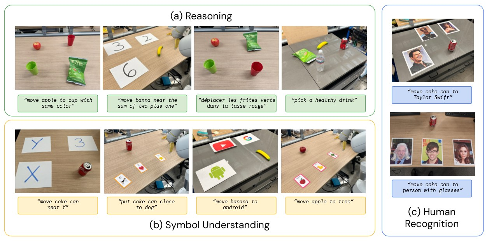
図8：RT-2 の創発的能力を調べるために用いた評価シナリオの一部の概要。これらは三つの大まかなカテゴリ、すなわち (a) 推論、(b) 記号理解、(c) 人物認識に焦点を当てている。可視化した指示は全指示の一部であり、全指示は付録 F.2 に列挙している。
図中ラベル：(a) Reasoning＝推論、"move apple to cup with same color"＝リンゴを同じ色のカップへ移動せよ、"move banna near the sum of two plus one"＝バナナを 2 足す 1 の和の近くへ移動せよ（banna は原文の綴りのまま）、"déplacer les frites verts dans la tasse rouge"（仏語）＝緑のチップスを赤いカップへ移動せよ、"pick a healthy drink"＝健康的な飲み物を拾え／(b) Symbol Understanding＝記号理解、"move coke can near Y"＝コーラの缶を Y の近くへ移動せよ、"put coke can close to dog"＝コーラの缶を犬の近くに置け、"move banana to android"＝バナナを Android（のロゴ）へ移動せよ、"move apple to tree"＝リンゴを木（のカード）へ移動せよ／(c) Human Recognition＝人物認識、"move coke can to Taylor Swift"＝コーラの缶をテイラー・スウィフトへ移動せよ、"move coke can to person with glasses"＝コーラの缶を眼鏡をかけた人へ移動せよ
| タスクグループ | タスク |
|---|---|
| 記号理解：Symbol 1 | move coke can near X, move coke can near 3, move coke can near Y （コーラの缶を X／3／Y の近くへ移動せよ） |
| 記号理解：Symbol 2 | move apple to tree, move apple to duck, move apple to apple, move apple to matching card （リンゴを木／アヒル／リンゴ／一致するカードへ移動せよ） |
| 記号理解：Symbol 3 | put coke can close to dog, push coke can on top of heart, place coke can above star （コーラの缶を犬の近くに置け、コーラの缶をハートの上に押せ、コーラの缶を星の上方に置け） |
| 推論：数学 | move banana to 2, move banna near the sum of two plus one, move banana near the answer of three times two, move banana near the smallest number （バナナを 2 へ移動せよ、バナナを 2 足す 1 の和の近くへ、3 掛ける 2 の答えの近くへ、最も小さい数の近くへ移動せよ） |
| 推論：ロゴ | move cup to google, move cup to android, move cup to youtube, move cup to a search engine, move cup to a phone （カップを Google／Android／YouTube／検索エンジン／電話へ移動せよ） |
| 推論：栄養 | get me a healthy snack, pick a healthy drink, pick up a sweet drink, move the healthy snack to the healthy drink, pick up a salty snack （健康的なおやつを取って、健康的な飲み物を拾え、甘い飲み物を拾え、健康的なおやつを健康的な飲み物へ移動せよ、塩味のおやつを拾え） |
| 推論：色と多言語 | move apple to cup with same color, move apple to cup with different color, move green chips to matching color cup, move apple to vaso verde, Bewegen Sie den Apfel in die rote Tasse, move green chips to vaso rojo, mueve la manzana al vaso verde, déplacer les frites verts dans la tasse rouge （リンゴを同じ色のカップへ／異なる色のカップへ移動せよ、緑のチップスを同じ色のカップへ移動せよ、リンゴを vaso verde（西語：緑のコップ）へ移動せよ、リンゴを赤いカップへ移動せよ（独語）、緑のチップスを vaso rojo（西語：赤いコップ）へ移動せよ、リンゴを緑のコップへ移動せよ（西語）、緑のチップスを赤いカップへ移動せよ（仏語）） |
| 人物認識：著名人 | move coke can to taylor swift, move coke can to tom cruise, move coke can to snoop dog （コーラの缶をテイラー・スウィフト／トム・クルーズ／スヌープ・ドッグへ移動せよ） |
| 人物認識：CelebA | move coke can to person with glasses, move coke can to the man with white hair, move coke can to the brunette lady （コーラの缶を眼鏡をかけた人／白髪の男性／ブルネットの女性へ移動せよ） |
表3：創発的能力の定量評価に用いた自然言語の指示。（訳注：指示文はモデルへの実際の入力であるため原文のまま掲載し、括弧内に訳を付した。「banna」「snoop dog」などの綴りは原文のまま。）
G 失敗事例の例
図 9 に、Language Table の設定における注目すべき種類の失敗事例の例を示す。これは RT-2 モデルが未知の物体の力学（unseen object dynamics）に汎化できない事例である。これらの事例では、モデルは言語指示に正しく注意を向け、最初に正しい物体へ移動することはできるものの、これらの物体の難しい力学を制御することができない。それらの力学は、この環境で見られてきた少数のブロック物体（Lynch et al., 2022）とは大きく異なる。その結果、ペンはテーブルから転がり落ちてしまい（図 9 左）、バナナの重心はロボットが接触する位置から遠く離れている（図 9 右）。押し動作の力学は予測も制御も難しいことで知られている点に留意する（Yu et al., 2016）。ロボットと環境の相互作用の力学におけるより大きな汎化は、多様な環境と物体にわたってデータセットをさらに拡大することで可能になるかもしれないと我々は仮説を立てている。例えばこの場合であれば、同種のより多様な押し動作の力学を含むデータセット（Dasari et al., 2019）である。
加えて、定性的・定量的な創発能力評価において実世界のマニピュレーションタスクで RT-2 が有望な性能を示したにもかかわらず、注目すべき失敗事例は依然として数多く見られる。例えば、現在の訓練データセットの構成と学習方法では、RT-2 は次のことを苦手とするようであった。
- 取っ手など、物体の特定の部位を把持すること
- タオルで拭く、道具を使うなど、ロボットデータに見られたものを超える新たな動作
- タオルを畳むなど、器用さや精密さを要する動作
- 何段階もの間接的な参照を必要とする拡張された推論
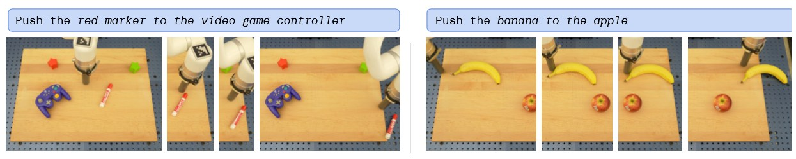
図9：実世界で未知の物体の力学への汎化に失敗した定性的な失敗事例の例。
図中ラベル：Push the red marker to the video game controller＝赤いマーカーをゲームのコントローラまで押せ、Push the banana to the apple＝バナナをリンゴまで押せ
H 定量的な実験結果
H.1 全体的な性能（4.1 節に対応）
表 4 に定量的な全体評価の結果を列挙する。RT-2 は既知タスクにおいてベースラインと同等以上の性能を示し、未知の物体、背景、環境への汎化においてベースラインを大幅に上回ることがわかる。
| モデル | 既知タスク | 未知の物体 | 未知の背景 | 未知の環境 | 未知の平均 | |||
|---|---|---|---|---|---|---|---|---|
| 易 | 難 | 易 | 難 | 易 | 難 | |||
| R3M（Nair et al., 2022b） | 45 | 32 | 14 | 13 | 9 | 0 | 2 | 12 |
| VC-1（Majumdar et al., 2023a） | 63 | 34 | 10 | 13 | 3 | 0 | 0 | 10 |
| RT-1（Brohan et al., 2022） | 92 | 31 | 43 | 71 | 9 | 26 | 14 | 32 |
| MOO（Stone et al., 2023） | 75 | 58 | 48 | 38 | 41 | 19 | 3 | 35 |
| RT-2-PaLI-X-55B（ours） | 91 | 70 | 62 | 96 | 48 | 63 | 35 | 62 |
| RT-2-PaLM-E-12B1（ours） | 93 | 84 | 76 | 75 | 71 | 36 | 33 | 62 |
表4：RT-2 の二つのインスタンスとベースラインの全体的な性能。既知の訓練タスク、ならびに新規物体・新規背景・新規環境への汎化を測る未知評価にわたって示す。
脚注1：PaLM-E-12B で用いられた元の事前学習データ混合（Driess et al.（2023）で説明されているもの）には、高レベルの VQA 計画タスク用のロボット画像が含まれており、それらは汎化シナリオで遭遇する画像と類似している可能性がある。ただし、それらの訓練事例はいずれも、本実験で評価する低レベルの行動を含んでいない。
H.2 創発能力の評価（4.2 節に対応）
表 5 に創発能力の定量評価の全結果を列挙する。RT-2 は、追加のロボットのデモンストレーションを一切用いることなく、これらの新しい指示において RT-1 より 2〜3 倍良い性能を示すことがわかる。これは、我々の手法によって Web 規模の視覚言語データセットでの事前学習に由来する能力を活用できることを示している。
| モデル | 記号理解 | 推論 | 人物認識 | 平均 | |||||||||
|---|---|---|---|---|---|---|---|---|---|---|---|---|---|
| Symbol 1 | Symbol 2 | Symbol 3 | 平均 | 数学 | ロゴ | 栄養 | 色／多言語 | 平均 | 著名人 | CelebA | 平均 | ||
| VC-1（Majumdar et al., 2023a） | 7 | 25 | 0 | 11 | 0 | 8 | 20 | 13 | 10 | 20 | 7 | 13 | 11 |
| RT-1（Brohan et al., 2022） | 27 | 20 | 0 | 16 | 5 | 0 | 32 | 28 | 16 | 20 | 20 | 20 | 17 |
| RT-2-PaLI-X-55B（ours） | 93 | 60 | 93 | 82 | 25 | 52 | 48 | 58 | 46 | 53 | 53 | 53 | 60 |
| RT-2-PaLM-E-12B（ours） | 67 | 20 | 20 | 36 | 35 | 56 | 44 | 35 | 43 | 33 | 53 | 43 | 40 |
表5：創発能力の定量評価における RT-2 とベースラインの性能。
H.3 サイズと学習のアブレーション（4.3 節に対応）
表 6 に、モデルサイズと学習方法にわたるアブレーションの定量的な結果を詳述する。いずれにおいても、モデルサイズが性能に重要な役割を果たすこと、そして共同ファインチューニングがファインチューニングを上回り、ファインチューニングがスクラッチからの学習を上回ることがわかる。
| モデル | サイズ | 学習 | 未知の物体 | 未知の背景 | 未知の環境 | 平均 | |||
|---|---|---|---|---|---|---|---|---|---|
| 易 | 難 | 易 | 難 | 易 | 難 | ||||
| RT-2-PaLI-X | 5B | スクラッチから学習（from scratch） | 0 | 10 | 46 | 0 | 0 | 0 | 9 |
| RT-2-PaLI-X | 5B | ファインチューニング（fine-tuning） | 24 | 38 | 79 | 50 | 36 | 23 | 42 |
| RT-2-PaLI-X | 5B | 共同ファインチューニング（co-fine-tuning） | 60 | 38 | 67 | 29 | 44 | 24 | 44 |
| RT-2-PaLI-X | 55B | ファインチューニング（fine-tuning） | 60 | 62 | 75 | 38 | 57 | 19 | 52 |
| RT-2-PaLI-X | 55B | 共同ファインチューニング（co-fine-tuning） | 70 | 62 | 96 | 48 | 63 | 35 | 63 |
表6：パラメータ数と学習戦略が汎化に与える影響を示す RT-2 のアブレーション。（訳注：55B・共同ファインチューニングの行は表 4 の RT-2-PaLI-X-55B と各列の値が同一だが、平均は表 4 では 62、本表では 63 となっており、原文で一致していない。）
I 思考の連鎖による推論の追加結果
4.4 節で説明した、RT-2-PaLM-E で達成した思考の連鎖による推論のロールアウトの追加例を図 10 に示す。
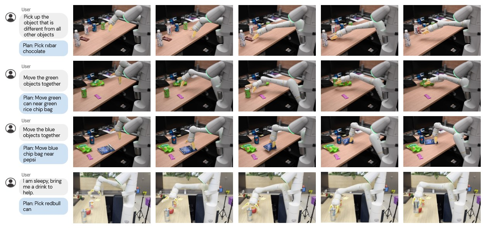
図10：思考の連鎖による推論を用いた RT-2 の追加例。
図中ラベル：User＝ユーザ、Plan＝計画、Pick up the object that is different from all other objects＝他のすべての物体と異なる物体を拾え／Plan: Pick rxbar chocolate＝計画：rxbar のチョコレートを拾う、Move the green objects together＝緑色の物体を一か所に集めよ／Plan: Move green can near green rice chip bag＝計画：緑の缶を緑のライスチップスの袋の近くへ移動する、Move the blue objects together＝青色の物体を一か所に集めよ／Plan: Move blue chip bag near pepsi＝計画：青いチップスの袋をペプシの近くへ移動する、I am sleepy, bring me a drink to help.＝眠いので、助けになる飲み物を持ってきて。／Plan: Pick redbull can＝計画：レッドブルの缶を拾う
| タスクグループ | タスク |
|---|---|
| 未知の物体（易） | pick banana, move banana near coke can, move orange can near banana, pick oreo, move oreo near apple, move redbull can near oreo, pick pear, pick coconut water, move pear near coconut water, move pepsi can near pear |
| 未知の物体（難） | pick cold brew can, pick large orange plate, pick chew toy, pick large tennis ball, pick bird ornament, pick fish toy, pick ginger lemon kombucha, pick egg separator, pick wrist watch, pick green sprite can, pick blue microfiber cloth, pick yellow pear, pick pretzel chip bag, pick disinfectant wipes, pick pineapple hint water, pick green cup, pick pickle snack, pick small blue plate, pick small orange rolling pin, pick octopus toy, pick catnip toy |
| 未知の背景（易） | pick green jalapeno chip bag, pick orange can, pick pepsi can, pick 7up can, pick apple, pick blue chip bag, pick orange, pick 7up can, move orange near sink, pick coke can, pick sponge, pick rxbar blueberry |
| 未知の背景（難） | pick wrist watch, pick egg separator, pick green sprite can, pick blue microfiber cloth, pick yellow pear, pick pretzel chip bag, pick disinfectant wipes, pick pineapple hint water, pick green cup, pick pickle snack, pick small blue plate, pick small orange rolling pin, pick octopus toy, pick catnip toy, pick swedish fish bag, pick large green rolling pin, pick black sunglasses |
| 未知の環境（易） | pick coke can, pick apple, pick rxbar blueberry, move apple near coke can, move rxbar blueberry near apple, move coke can near rxbar blueberry, pick blue plastic bottle, pick sponge, pick blue chip bag, move sponge near blue plastic bottle, move blue chip bag near sponge, move blue plastic bottle near blue chip bag, move coke can near white mug, move sponge near white mug, move coke can near yellow bowl, move sponge near yellow bowl, move coke can near green cloth, move sponge near green cloth, move coke can near plate, move sponge near plate, move coke can near spoon, move sponge near spoon, move coke can near orange cup, move sponge near orange cup, pick white mug, pick yellow bowl, pick green cloth, move white mug near sponge, move yellow bowl near sponge, move green cloth near sponge, pick plate, pick spoon, pick orange cup, move plate near sponge, move spoon near sponge, move orange cup near sponge, put coke can into sink, drop coke can into sink, push coke can into sink, put sponge into sink, drop sponge into sink, push sponge into sink, put green cloth into sink, drop green cloth into sink, push green cloth into sink |
| 未知の環境（難） | pick coke can, pick apple, pick rxbar blueberry, move apple near coke can, move rxbar blueberry near apple, move coke can near rxbar blueberry, move coke can near stapler, move apple near stapler, move coke can near keyboard, move apple near keyboard, move coke can near tissue box, move apple near tissue box, move coke can near papers, move apple near papers, move coke can near mouse, move apple near mouse, move coke can near book, move apple near book, pick marker, pick stapler, pick mouse, move marker near apple, move stapler near apple, move mouse near apple, push coke can to the left, push coke can to the right, push sponge to the left, push sponge to the right, push tissue box to the left, push tissue box to the right, point at coke can, point at sponge, point at tissue box |
表2：新規物体、新規環境、新規背景という次元に沿って制御された分布シフトをテストする評価に用いた自然言語の指示。各カテゴリについて、分布シフトがより小さい評価設定とより大きい評価設定を導入している。これらのシナリオの可視化を図 3 に示す。（訳注：指示文はモデルへの実際の入力であるため原文のまま掲載した。各指示の型の意味は、pick X＝X を拾え、move X near Y＝X を Y の近くへ移動せよ、put / drop / push X into sink＝X をシンクに入れよ／落とせ／押し込め、push X to the left / right＝X を左／右へ押せ、point at X＝X を指し示せ、である。物体名は例えば coke can＝コーラの缶、sponge＝スポンジ、rolling pin＝麺棒、egg separator＝卵分離器、catnip toy＝キャットニップ入りのおもちゃ、tissue box＝ティッシュ箱、stapler＝ホッチキス、mouse＝マウス。「未知の背景（易）」で pick 7up can が 2 回現れるのは原文どおり。原文キャプションの「if shown」は「is shown」の誤植と思われる。）